Section 6.1 Definition of the Integral
Arguably the easiest way to introduce integration is by considering the area between the graph of a given function and the \(x\)-axis, between two specific vertical lines — such as is shown in the figure above. We'll follow this route by starting with a motivating example.
Subsection 6.1.1 A Motivating Example
Let us find the area under the curve \(y=e^x\) (and above the \(x\)-axis) for \(0\le x\le 1\text{.}\) That is, the area of \(\big\{\ (x,y)\ \big|\ 0\le y\le e^x\text{,}\) \(0\le x\le 1\ \big\}\text{.}\)

This area is equal to the “definite integral”
Do not worry about this notation or terminology just yet. We discuss it at length below. In different applications this quantity will have different interpretations — not just area. For example, if \(x\) is time and \(e^x\) is your velocity at time \(x\text{,}\) then we'll see later (in Example 6.1.18) that the specified area is the net distance travelled between time \(0\) and time \(1\text{.}\) After we finish with the example, we'll mimic it to give a general definition of the integral \(\int_a^b f(x) \dee{x}\text{.}\)
Example 6.1.1. Computing an area with vertical strips.
We wish to compute the area of \(\big\{\ (x,y)\ \big|\ 0\le y\le e^x\text{,}\) \(0\le x\le 1\ \big\}\text{.}\) We know, from our experience with \(e^x\) in differential calculus, that the curve \(y=e^x\) is not easily written in terms of other simpler functions, so it is very unlikely that we would be able to write the area as a combination of simpler geometric objects such as triangles, rectangles or circles.
So rather than trying to write down the area exactly, our strategy is to approximate the area and then make our approximation more and more precise 1 . We choose 2 to approximate the area as a union of a large number of tall thin (vertical) rectangles. As we take more and more rectangles we get better and better approximations. Taking the limit as the number of rectangles goes to infinity gives the exact area 3 .
As a warm up exercise, we'll now just use four rectangles. In Example 6.1.2, below, we'll consider an arbitrary number of rectangles and then take the limit as the number of rectangles goes to infinity. So
- subdivide the interval \(0\le x\le 1\) into \(4\) equal subintervals each of width \(\frac{1}{4}\text{,}\) and
- subdivide the area of interest into four corresponding vertical strips, as in the figure below.
The area we want is exactly the sum of the areas of all four strips.

Each of these strips is almost, but not quite, a rectangle. While the bottom and sides are fine (the sides are at right-angles to the base), the top of the strip is not horizontal. This is where we must start to approximate. We can replace each strip by a rectangle by just levelling off the top. But now we have to make a choice — at what height do we level off the top?
Consider, for example, the leftmost strip. On this strip, \(x\) runs from \(0\) to \(\frac{1}{4}\text{.}\) As \(x\) runs from \(0\) to \(\frac{1}{4}\text{,}\) the height \(y\) runs from \(e^0\) to \(e^{\frac{1}{4}}\text{.}\) It would be reasonable to choose the height of the approximating rectangle to be somewhere between \(e^0\) and \(e^{\frac{1}{4}}\text{.}\) Which

height should we choose? Well, actually it doesn't matter. When we eventually take the limit of infinitely many approximating rectangles all of those different choices give exactly the same final answer. We'll say more about this later.
In this example we'll do two sample computations.
-
For the first computation we approximate each slice by a rectangle whose height is the height of the left hand side of the slice.
- On the first slice, \(x\) runs from \(0\) to \(\frac{1}{4}\text{,}\) and the height \(y\) runs from \(e^0\text{,}\) on the left hand side, to \(e^{\frac{1}{4}}\text{,}\) on the right hand side.
- So we approximate the first slice by the rectangle of height \(e^0\) and width \(\frac{1}{4}\text{,}\) and hence of area \(\frac{1}{4}\,e^0 =\frac{1}{4}\text{.}\)
- On the second slice, \(x\) runs from \(\frac{1}{4}\) to \(\frac{1}{2}\text{,}\) and the height \(y\) runs from \(e^{\frac{1}{4}}\) and \(e^{\frac{1}{2}}\text{.}\)
- So we approximate the second slice by the rectangle of height \(e^{\frac{1}{4}}\) and width \(\frac{1}{4}\text{,}\) and hence of area \(\frac{1}{4}\,e^{\frac{1}{4}}\text{.}\)
- And so on.
- All together, we approximate the area of interest by the sum of the areas of the four approximating rectangles, which is\begin{gather*} \big[1+ e^{\frac{1}{4}} + e^{\frac{1}{2}} +e^{\frac{3}{4}}\big]\frac{1}{4} =1.5124 \end{gather*}
- This particular approximation is called the “left Riemann sum approximation to \(\int_0^1 e^x\dee{x}\) with \(4\) subintervals”. We'll explain this terminology later.
- This particular approximation represents the shaded area in the figure on the left below. Note that, because \(e^x\) increases as \(x\) increases, this approximation is definitely smaller than the true area.


-
For the second computation we approximate each slice by a rectangle whose height is the height of the right hand side of the slice.
- On the first slice, \(x\) runs from \(0\) to \(\frac{1}{4}\text{,}\) and the height \(y\) runs from \(e^0\text{,}\) on the left hand side, to \(e^{\frac{1}{4}}\text{,}\) on the right hand side.
- So we approximate the first slice by the rectangle of height \(e^{\frac{1}{4}}\) and width \(\frac{1}{4}\text{,}\) and hence of area \(\frac{1}{4}\,e^{\frac{1}{4}}\text{.}\)
- On the second slice, \(x\) runs from \(\frac{1}{4}\) to \(\frac{1}{2}\text{,}\) and the height \(y\) runs from \(e^{\frac{1}{4}}\) and \(e^{\frac{1}{2}}\text{.}\)
- So we approximate the second slice by the rectangle of height \(e^{\frac{1}{2}}\) and width \(\frac{1}{4}\text{,}\) and hence of area \(\frac{1}{4}\,e^{\frac{1}{2}}\text{.}\)
- And so on.
- All together, we approximate the area of interest by the sum of the areas of the four approximating rectangles, which is\begin{gather*} \big[e^{\frac{1}{4}} + e^{\frac{1}{2}} +e^{\frac{3}{4}}+e^1\big]\frac{1}{4} =1.9420 \end{gather*}
- This particular approximation is called the “right Riemann sum approximation to \(\int_0^1 e^x\dee{x}\) with \(4\) subintervals”.
- This particular approximation represents the shaded area in the figure on the right above. Note that, because \(e^x\) increases as \(x\) increases, this approximation is definitely larger than the true area.
Now for the full computation that gives the exact area.
Example 6.1.2. Computing an area exactly.
Recall that we wish to compute the area of
and that our strategy is to approximate this area by the area of a union of a large number of very thin rectangles, and then take the limit as the number of rectangles goes to infinity. In Example 6.1.1, we used just four rectangles. Now we'll consider a general number of rectangles, that we'll call \(n\text{.}\) Then we'll take the limit \(n\rightarrow\infty\text{.}\) So
- pick a natural number \(n\) and
- subdivide the interval \(0\le x\le 1\) into \(n\) equal subintervals each of width \(\frac{1}{n}\text{,}\) and
- subdivide the area of interest into corresponding thin strips, as in the figure below.
The area we want is exactly the sum of the areas of all of the thin strips.

Each of these strips is almost, but not quite, a rectangle. As in Example 6.1.1, the only problem is that the top is not horizontal. So we approximate each strip by a rectangle, just by levelling off the top. Again, we have to make a choice — at what height do we level off the top?
Consider, for example, the leftmost strip. On this strip, \(x\) runs from \(0\) to \(\frac{1}{n}\text{.}\) As \(x\) runs from \(0\) to \(\frac{1}{n}\text{,}\) the height \(y\) runs from \(e^0\) to \(e^{\frac{1}{n}}\text{.}\) It would be reasonable to choose the height of the approximating rectangle to be somewhere between \(e^0\) and \(e^{\frac{1}{n}}\text{.}\) Which height should we choose?
Well, as we said in Example 6.1.1, it doesn't matter. We shall shortly take the limit \(n\rightarrow\infty\) and, in that limit, all of those different choices give exactly the same final answer. We won't justify that statement in this example, but there will be an (optional) section shortly that provides the justification. For this example we just, arbitrarily, choose the height of each rectangle to be the height of the graph \(y=e^x\) at the smallest value of \(x\) in the corresponding strip 4 . The figure on the left below shows the approximating rectangles when \(n=4\) and the figure on the right shows the approximating rectangles when \(n=8\text{.}\)

Now we compute the approximating area when there are \(n\) strips.
- We approximate the leftmost strip by a rectangle of height \(e^0\text{.}\) All of the rectangles have width \(\frac{1}{n}\text{.}\) So the leftmost rectangle has area \(\frac{1}{n}e^0\text{.}\)
- On strip number \(2\text{,}\) \(x\) runs from \(\frac{1}{n}\) to \(\frac{2}{n}\text{.}\) So the smallest value of \(x\) on strip number \(2\) is \(\frac{1}{n}\text{,}\) and we approximate strip number \(2\) by a rectangle of height \(e^{\frac{1}{n}}\) and hence of area \(\frac{1}{n}e^{\frac{1}{n}} \text{.}\)
- And so on.
- On the last strip, \(x\) runs from \(\frac{n-1}{n}\) to \(\frac{n}{n}=1\text{.}\) So the smallest value of \(x\) on the last strip is \(\frac{n-1}{n}\text{,}\) and we approximate the last strip by a rectangle of height \(e^{\frac{(n-1)}{n}}\) and hence of area \(\frac{1}{n}e^{\frac{(n-1)}{n}} \text{.}\)
The total area of all of the approximating rectangles is
Now the sum in the brackets might look a little intimidating because of all the exponentials, but it actually has a pretty simple structure that can be easily seen if we rename \(e^{\frac{1}{n}}=r\text{.}\) Then
- the first term is 1 = \(r^0\) and
- the second term is \(e^{\frac{1}{n}}=r^1\) and
- the third term is \(e^{\frac{2}{n}}=r^2\) and
- the fourth term is \(e^{\frac{3}{n}}=r^3\) and
- and so on and
- the last term is \(e^{\frac{(n-1)}{n}}=r^{n-1}\text{.}\)
So
The sum in brackets is known as a geometric sum and satisfies a nice simple formula:
Equation 6.1.3. Geometric sum.
The derivation of the above formula is not too difficult. So let's derive it in a little aside.
Now we can go back to our area approximation armed with the above result about geometric sums.
To get the exact area 5 all we need to do is make the approximation better and better by taking the limit \(n\rightarrow \infty\text{.}\) The limit will look more familiar if we rename \(\frac{1}{n}\) to \(X\text{.}\) As \(n\) tends to infinity, \(X\) tends to \(0\text{,}\) so
Examining this limit we see that both numerator and denominator tend to zero as \(X\to 0\text{,}\) and so we cannot evaluate this limit by computing the limits of the numerator and denominator separately and then dividing the results. Despite this, the limit is not too hard to evaluate; here we give two ways:
- Perhaps the easiest way to compute the limit is by using l'Hôpital's rule 6 . Since both numerator and denominator go to zero, this is a \(\frac00\) indeterminate form. Thus\begin{align*} \lim_{X\rightarrow 0} \frac{X}{e^X-1} &=\lim_{X\rightarrow 0} \frac{\diff{}{X}X}{\diff{}{X}(e^X-1)} =\lim_{X\rightarrow 0} \frac{1}{e^X}=1 \end{align*}
- Another way 7 to evaluate the same limit is to observe that it can be massaged into the form of the limit definition of the derivative. First notice that\begin{align*} \lim_{X\rightarrow 0} \frac{X}{e^X-1} &= \left[\lim_{X\rightarrow 0} \frac{e^X-1}{X} \right]^{-1} \end{align*}provided this second limit exists and is nonzero 8 . This second limit should look a little familiar:\begin{align*} \lim_{X\rightarrow 0} \frac{e^X-1}{X} &= \lim_{X\rightarrow 0} \frac{e^X-e^0}{X-0} \end{align*}which is just the definition of the derivative of \(e^x\) at \(x=0\text{.}\) Hence we have\begin{align*} \lim_{X\rightarrow 0} \frac{X}{e^X-1} &=\left[\lim_{X\rightarrow 0}\, \frac{e^X-e^0}{X-0} \right]^{-1}\\ &=\left[\diff{}{X}e^X\Big|_{X=0} \right]^{-1}\\ &=\left[e^X\big|_{X=0}\right]^{-1}\\ &=1 \end{align*}
So, after this short aside into limits, we may now conclude that
Subsection 6.1.2 Optional — A more rigorous area computation
In Example 6.1.1 above we considered the area of the region \(\big\{\ (x,y)\ \big|\ 0\le y\le e^x\text{,}\) \(0\le x\le 1\ \big\}\text{.}\) We approximated that area by the area of a union of \(n\) thin rectangles. We then claimed that upon taking the number of rectangles to infinity, the approximation of the area became the exact area. However we did not justify the claim. The purpose of this optional section is to make that calculation rigorous.
The broad set-up is the same. We divide the region up into \(n\) vertical strips, each of width \(\frac1n\) and we then approximate those strips by rectangles. However rather than an uncontrolled approximation, we construct two sets of rectangles — one set always smaller than the original area and one always larger. This then gives us lower and upper bounds on the area of the region. Finally we make use of the squeeze theorem 9 to establish the result.
- To find our upper and lower bounds we make use of the fact that \(e^x\) is an increasing function. We know this because the derivative \(\diff{}{x}e^x=e^x\) is always positive. Consequently, the smallest and largest values of \(e^x\) on the interval \(a\le x\le b\) are \(e^a\) and \(e^b\text{,}\) respectively.
-
In particular, for \(0\le x\le \frac{1}{n}\text{,}\) \(e^x\) takes values only between \(e^0\) and \(e^{\frac{1}{n}}\text{.}\) As a result, the first strip
\begin{gather*} \big\{\ (x,y)\ \big|\ 0\le x\le \frac{1}{n},\ 0\le y\le e^x\ \big\} \end{gather*}- contains the rectangle of \(0\le x\le \frac{1}{n}\text{,}\) \(0\le y\le e^0\) (the lighter rectangle in the figure on the left below) and
- is contained in the rectangle \(0\le x\le \frac{1}{n}\text{,}\) \(0\le y\le e^{\frac{1}{n}}\) (the largest rectangle in the figure on the left below).
Hence
\begin{gather*} \frac{1}{n}e^{0} \le {\rm Area} \big\{\ (x,y)\ \big|\ 0\le x\le \frac{1}{n},\ 0\le y\le e^x\ \big\} \le \frac{1}{n}e^{\frac{1}{n}} \end{gather*}

-
Similarly, for the second, third, …, last strips, as in the figure on the right above,
\begin{align*} \frac{1}{n}e^{\frac{1}{n}} &\le {\rm Area}\big\{\ (x,y)\ \big|\ \frac{1}{n}\le x\le \frac{2}{n},\ 0\le y\le e^x\ \big\} \ \ \ \le \frac{1}{n}e^{\frac{2}{n}}\\ \frac{1}{n}e^{\frac{2}{n}} &\le {\rm Area}\big\{\ (x,y)\ \big|\ \frac{2}{n}\le x\le \frac{3}{n},\ 0\le y\le e^x\ \big\} \ \ \ \le \frac{1}{n}e^{\frac{3}{n}}\\ & \vdots\\ \frac{1}{n}e^{\frac{(n-1)}{n}} &\le {\rm Area}\big\{\ (x,y)\ \big|\ \frac{(n-1)}{n}\le x\le \frac{n}{n},\ 0\le y\le e^x\ \big\} \le\frac{1}{n}e^{\frac{n}{n}} \end{align*} -
Adding these \(n\) inequalities together gives
\begin{align*} &\frac{1}{n}\left(1+e^{\frac{1}{n}}+\cdots+e^{\frac{(n-1)}{n}}\right)\\ &\le {\rm Area}\big\{\ (x,y)\ \big|\ 0\le x\le 1,\ 0\le y\le e^x\ \big\}\\ &\le \frac{1}{n}\left(e^{\frac{1}{n}}+e^{\frac{2}{n}}+\cdots+ e^{\frac{n}{n}}\right) \end{align*} - We can then recycle equation 6.1.3 with \(r=e^{\frac1n}\text{,}\) so that \(r^n=\left(e^{\frac{1}{n}}\right)^n=e\text{.}\) Thus we have\begin{gather*} \frac{1}{n}\frac{e-1}{e^{\frac{1}{n}}-1} \le {\rm Area}\big\{\ (x,y)\ \big|\ 0\le x\le 1,\ 0\le y\le e^x\ \big\} \le \frac{1}{n}e^{\frac{1}{n}}\frac{e-1}{e^{\frac{1}{n}}-1} \end{gather*}where we have used the fact that the upper bound is a simple multiple of the lower bound:\begin{align*} \left(e^{\frac{1}{n}}+e^{\frac{2}{n}}+\cdots+ e^{\frac{n}{n}}\right) &= e^{\frac{1}{n}}\left(1+e^{\frac{1}{n}}+\cdots +e^{\frac{(n-1)}{n}}\right). \end{align*}
-
We now apply the squeeze theorem to the above inequalities. In particular, the limits of the lower and upper bounds are
\begin{align*} \lim_{n\rightarrow\infty}\frac{1}{n}\frac{e-1}{e^{\frac{1}{n}}-1} &=(e-1)\lim_{X=\frac{1}{n}\rightarrow 0}\frac{X}{e^X-1} =e-1 \end{align*}(by l'Hôpital's rule) and
\begin{align*} \lim_{n\rightarrow\infty}\frac{1}{n}e^{\frac{1}{n}}\frac{e-1}{e^{\frac{1}{n}}-1} &=(e-1)\lim_{X=\frac{1}{n}\rightarrow 0}\cdot \frac{Xe^X}{e^X-1}\\ &=(e-1)\lim_{X\to 0}e^X \cdot \lim_{X=\to 0}\frac{X}{e^X-1}\\ &=(e-1) \cdot 1 \cdot 1 \end{align*}Thus, since the exact area is trapped between the lower and upper bounds, the squeeze theorem then implies that
\begin{align*} \text{Exact area} &= e-1. \end{align*}
Subsection 6.1.3 Summation notation
As you can see from the above example (and the more careful rigorous computation), our discussion of integration will involve a fair bit of work with sums of quantities. To this end, we make a quick aside into summation notation. While one can work through the material below without this notation, proper summation notation is well worth learning, so we advise the reader to persevere.
Writing out the summands explicitly can become quite impractical — for example, say we need the sum of the first 11 squares:
This becomes tedious. Where the pattern is clear, we will often skip the middle few terms and instead write
A far more precise way to write this is using \(\Sigma\) (capital-sigma) notation. For example, we can write the above sum as
This is read as
The sum from \(k\) equals 1 to 11 of \(k^2\text{.}\)
More generally
Definition 6.1.4.
Let \(m\leq n\) be integers and let \(f(x)\) be a function defined on the integers. Then we write
to mean the sum of \(f(k)\) for \(k\) from \(m\) to \(n\text{:}\)
Similarly we write
to mean
for some set of coefficients \(\{ a_m, \ldots, a_n \}\text{.}\)
Consider the example
It is important to note that the right hand side of this expression evaluates to a number 10 ; it does not contain “\(k\)”. The summation index \(k\) is just a “dummy” variable and it does not have to be called \(k\text{.}\) For example
Also the summation index has no meaning outside the sum. For example
has no mathematical meaning; it is gibberish.
A sum can be represented using summation notation in many different ways. If you are unsure as to whether or not two summation notations represent the same sum, just write out the first few terms and the last couple of terms. For example,
are equal.
Here is a theorem that gives a few rules for manipulating summation notation.
Theorem 6.1.5. Arithmetic of Summation Notation.
Let \(n\ge m\) be integers. Then for all real numbers \(c\) and \(a_i,b_i\text{,}\) \(m\le i\le n\text{.}\)
- \(\displaystyle \sum\limits_{i=m}^nca_i = c\bigg(\sum\limits_{i=m}^na_i\bigg)\)
- \(\displaystyle \sum\limits_{i=m}^n(a_i+b_i) = \bigg(\sum\limits_{i=m}^na_i\bigg) + \bigg(\sum\limits_{i=m}^nb_i\bigg)\)
- \(\displaystyle \sum\limits_{i=m}^n(a_i-b_i) = \bigg(\sum\limits_{i=m}^na_i\bigg) - \bigg(\sum\limits_{i=m}^nb_i\bigg)\)
Proof.
We can prove this theorem by just writing out both sides of each equation, and observing that they are equal, by the usual laws of arithmetic 11 . For example, for the first equation, the left and right hand sides are
They are equal by the usual distributive law. The “distributive law” is the fancy name for \(c(a+b)=ca+cb\text{.}\)
Not many sums can be computed exactly 12 . Here are some that can. The first few are used a lot.
Theorem 6.1.6.
- \(\sum\limits_{i=0}^n ar^i = a\frac{1-r^{n+1}}{1-r}\text{,}\) for all real numbers \(a\) and \(r\ne 1\) and all integers \(n\ge 0\text{.}\)
- \(\sum\limits_{i=1}^n 1 = n\text{,}\) for all integers \(n\ge 1\text{.}\)
- \(\sum\limits_{i=1}^n i = \frac{1}{2}n(n+1)\text{,}\) for all integers \(n\ge 1\text{.}\)
- \(\sum\limits_{i=1}^n i^2 = \frac{1}{6}n(n+1)(2n+1)\text{,}\) for all integers \(n\ge 1\text{.}\)
- \(\sum\limits_{i=1}^n i^3 = \Big[\frac{1}{2}n(n+1)\Big]^2\text{,}\) for all integers \(n\ge 1\text{.}\)
Subsubsection 6.1.3.1 Proof of Theorem 6.1.6 (Optional)
Proof.
- The first sum is\begin{gather*} \sum_{i=0}^n ar^i =ar^0 + ar^1 + ar^2 + \cdots + ar^n \end{gather*}which is just the left hand side of equation 6.1.3, with \(n\) replaced by \(n+1\) and then multiplied by \(a\text{.}\)
- The second sum is just \(n\) copies of \(1\) added together, so of course the sum is \(n\text{.}\)
- The third and fourth sums are discussed in the appendix of the CLP-1 text. In that discussion certain “tricks” are used to compute the sums with only simple arithmetic. Those tricks do not easily generalise to the fifth sum.
-
Instead of repeating that appendix, we'll derive the third sum using a trick that generalises to the fourth and fifth sums (and also to higher powers). The trick uses the generating function 13 \(S(x)\text{:}\)
Equation 6.1.7. Finite geometric sum.
\begin{align*} S(x) = 1+x+x^2+\cdots+x^n &= \frac{x^{n+1}-1}{x-1} \end{align*}Notice that this is just the geometric sum given by equation 6.1.3 with \(n\) replaced by \(n+1\text{.}\)
Now, consider the limit
\begin{align*} \lim_{x\to 1} S(x) &= \lim_{x\to 1} \left(1+x+x^2+\cdots+x^n\right) = n+1 \qquad \text{but also}\\ &= \lim_{x\to 1} \frac{x^{n+1}-1}{x-1} \qquad\qquad\qquad \text{now use l'Hôpital's rule}\\ &= \lim_{x\to 1} \frac{(n+1)x^n}{1} = n+1. \end{align*}This is not so hard (or useful). But now consider the derivative of \(S(x)\text{:}\)
\begin{align*} S'(x) &= 1 +2x + 3x^2 + \cdots + n x^{n-1}\\ &= \diff{}{x} \left[\frac{x^{n+1}-1}{x-1}\right] \qquad\qquad\qquad\qquad \text{use the quotient rule}\\ &= \frac{(x-1)\cdot (n+1)x^n - (x^{n+1}-1)\cdot 1}{(x-1)^2} \qquad \text{now clean it up}\\ &= \frac{nx^{n+1}-(n+1)x^n+1}{(x-1)^2}. \end{align*}Hence if we take the limit of the above expression as \(x\to 1\) we recover
\begin{align*} \lim_{x\to 1} S'(x) &= 1 +2 +3+\cdots+n\\ &=\lim_{x\to 1} \frac{nx^{n+1}-(n+1)x^n+1}{(x-1)^2} \qquad\qquad \text{now use l'Hôpital's rule}\\ &=\lim_{x\to 1} \frac{n(n+1)x^{n}-n(n+1)x^{n-1}}{2(x-1)} \qquad \text{l'Hôpital's rule again}\\ &=\lim_{x\to 1} \frac{n^2(n+1)x^{n-1}-n(n+1)(n-1)x^{n-2}}{2}\\ &= \frac{n^2(n+1) - n(n-1)(n+1)}{2} = \frac{n(n+1)}{2} \end{align*}as required. This computation can be done without l'Hôpital's rule, but the manipulations required are a fair bit messier.
The derivation of the fourth and fifth sums is similar to, but even more tedious than, that of the third sum. One takes two or three derivatives of the generating functional.
Subsection 6.1.4 The Definition of the Definite Integral
In this section we give a definition of the definite integral \(\ds \int_a^b f(x)\dee{x}\) generalising the machinery we used in Example 6.1.1. But first some terminology and a couple of remarks to better motivate the definition.
Definition 6.1.8.
The symbol \(\ds \int_a^b f(x)\dee{x}\) is read “the definite integral of the function \(f(x)\) from \(a\) to \(b\)”. The function \(f(x)\) is called the integrand of \(\int_a^b f(x)\dee{x}\) and \(a\) and \(b\) are called 14 the limits of integration. The interval \(a\le x \le b\) is called the interval of integration and is also called the domain of integration.
Before we explain more precisely what the definite integral actually is, a few remarks (actually — a few interpretations) are in order.
-
If \(f(x)\ge 0\) and \(a\le b\text{,}\) one interpretation of the symbol \(\ds \int_a^b f(x)\dee{x}\) is “the area of the region \(\big\{\ (x,y)\ \big|\ a\le x\le b,\ 0\le y\le f(x)\ \big\}\)”.

In this way we can rewrite the area in Example 6.1.1 as the definite integral \(\int_0^1 e^x \dee{x}\text{.}\)
- This interpretation breaks down when either \(a \gt b\) or \(f(x)\) is not always positive, but it can be repaired by considering “signed areas”.
-
If \(a\le b\text{,}\) but \(f(x)\) is not always positive, one interpretation of \(\int_a^b f(x)\dee{x}\) is “the signed area between \(y=f(x)\) and the \(x\)-axis for \(a\le x\le b\)”. For “signed area” (which is also called the “net area”), areas above the \(x\)-axis count as positive while areas below the \(x\)-axis count as negative. In the example below, we have the graph of the function
\begin{align*} f(x)=\begin{cases} -1 & \text{if }1\le x\le 2\\ 2 & \text{if }2 \lt x\le 4 \\ 0 & \text{otherwise} \end{cases} \end{align*}The \(2\times 2\) shaded square above the \(x\)-axis has signed area \(+2\times 2=+4\text{.}\) The \(1\times 1\) shaded square below the \(x\)-axis has signed area \(-1\times 1=-1\text{.}\) So, for this \(f(x)\text{,}\)
\begin{gather*} \int_0^5 f(x)\dee{x} = +4-1=3 \end{gather*}
- We'll come back to the case \(b \lt a\) later.
We're now ready to define \(\int_a^b f(x)\dee{x}\text{.}\) The definition is a little involved, but essentially mimics what we did in Example 6.1.1 (which is why we did the example before the definition). The main differences are that we replace the function \(e^x\) by a generic function \(f(x)\) and we replace the interval from \(0\) to \(1\) by the generic interval 15 from \(a\) to \(b\text{.}\)
- We start by selecting any natural number \(n\) and subdividing the interval from \(a\) to \(b\) into \(n\) equal subintervals. Each subinterval has width \(\frac{b-a}{n}\text{.}\)
- Just as was the case in Example 6.1.1 we will eventually take the limit as \(n\to\infty\text{,}\) which squeezes the width of each subinterval down to zero.
- For each integer \(0\le i\le n\text{,}\) define \(x_i = a + i \cdot\frac{b-a}{n}\text{.}\) Note that this means that \(x_0=a\) and \(x_n = b\text{.}\) It is worth keeping in mind that these numbers \(x_i\) do depend on \(n\) even though our choice of notation hides this dependence.
-
Subinterval number \(i\) is \(x_{i-1} \leq x \leq x_i\text{.}\) In particular, on the first subinterval, \(x\) runs from \(x_0=a\) to \(x_1=a+\frac{b-a}{n}\text{.}\) On the second subinterval, \(x\) runs from \(x_1\) to \(x_2=a+2\frac{b-a}{n}\text{.}\)

-
On each subinterval we now pick \(x_{i,n}^*\) between \(x_{i-1}\) and \(x_i\text{.}\) We then approximate \(f(x)\) on the \(i^\mathrm{th}\) subinterval by the constant function \(y=f(x_{i,n}^*)\text{.}\) We include \(n\) in the subscript to remind ourselves that these numbers depend on \(n\text{.}\)
Geometrically, we're approximating the region
\begin{gather*} \big\{\ (x,y)\ \big|\ \text{$x$ is between $x_{i-1}$ and $x_i$, and $y$ is between $0$ and $f(x)$} \ \big\} \end{gather*}by the rectangle
\begin{gather*} \big\{\ (x,y)\ \big|\ \text{$x$ is between $x_{i-1}$ and $x_i$, and $y$ is between $0$ and $f(x_{i,n}^*)$} \ \big\} \end{gather*}
In Example 6.1.1 we chose \(x_{i,n}^* = x_{i-1}\) and so we approximated the function \(e^x\) on each subinterval by the value it took at the leftmost point in that subinterval.
- So, when there are \(n\) subintervals our approximation to the signed area between the curve \(y=f(x)\) and the \(x\)-axis, with \(x\) running from \(a\) to \(b\text{,}\) is\begin{gather*} \sum_{i=1}^n f(x_{i,n}^*)\cdot \frac{b-a}{n} \end{gather*}We interpret this as the signed area since the summands \(f(x_{i,n}^*)\cdot\frac{b-a}{n}\) need not be positive.
- Finally we define the definite integral by taking the limit of this sum as \(n\rightarrow\infty\text{.}\)
Oof! This is quite an involved process, but we can now write down the definition we need.
Definition 6.1.9.
Let \(a\) and \(b\) be two real numbers and let \(f(x)\) be a function that is defined for all \(x\) between \(a\) and \(b\text{.}\) Then we define
when the limit exists and takes the same value for all choices of the \(x_{i,n}^*\)'s. In this case, we say that \(f\) is integrable on the interval from \(a\) to \(b\text{.}\)
Of course, it is not immediately obvious when this limit should exist. Thankfully it is easier for a function to be “integrable” than it is for it to be “differentiable”.
Theorem 6.1.10.
Let \(f(x)\) be a function on the interval \([a,b]\text{.}\) If
- \(f(x)\) is continuous on \([a,b]\text{,}\) or
- \(f(x)\) has a finite number of jump discontinuities on \([a,b]\) (and is otherwise continuous)
then \(f(x)\) is integrable on \([a,b]\text{.}\)
We will not justify this theorem. But a slightly weaker statement is proved in (the optional) Section 6.1.7. Of course this does not tell us how to actually evaluate any definite integrals — but we will get to that in time.
Some comments:
- Note that, in Definition 6.1.9, we allow \(a\) and \(b\) to be any two real numbers. We do not require that \(a \lt b\text{.}\) That is, even when \(a \gt b\text{,}\) the symbol \(\int_a^b f(x)\dee{x}\) is still defined by the formula of Definition 6.1.9. We'll get an interpretation for \(\int_a^b f(x)\dee{x}\text{,}\) when \(a \gt b\text{,}\) later.
- It is important to note that the definite integral \(\int_a^b f(x)\dee{x}\) represents a number, not a function of \(x\text{.}\) The integration variable \(x\) is another “dummy” variable, just like the summation index \(i\) in \(\sum_{i=m}^n a_i\) (see Section 6.1.3). The integration variable does not have to be called \(x\text{.}\) For example\begin{gather*} \int_a^b f(x)\dee{x} = \int_a^b f(t)\dee{t} = \int_a^b f(u)\dee{u} \end{gather*}Just as with summation variables, the integration variable \(x\) has no meaning outside of \(f(x)\dee{x}\text{.}\) For example\begin{gather*} x\int_0^1 e^x\dee{x}\qquad\text{and}\qquad \int_0^x e^x\dee{x} \end{gather*}are both gibberish.
The sum inside definition 6.1.9 is named after Bernhard Riemann 16 who made the first rigorous definition of the definite integral and so placed integral calculus on rigorous footings.
Definition 6.1.11.
The sum \(\ds \) inside definition 6.1.9
is called a Riemann sum. It is also often written as
where \(\De x = \frac{b-a}{n}\text{.}\)
- If we choose each \(x_{i,n}^* = x_{i-1}=a+(i-1)\frac{b-a}{n}\) to be the left hand end point of the \(i^{\rm th}\) interval, \([x_{i-1},x_i]\text{,}\) we get the approximation\begin{gather*} \sum_{i=1}^n f\left(a+(i-1)\frac{b-a}{n}\right)\,\frac{b-a}{n} \end{gather*}which is called the “left Riemann sum approximation to \(\int_a^b f(x)\dee{x}\) with \(n\) subintervals”. This is the approximation used in Example 6.1.1.
- In the same way, if we choose \(x_{i,n}^* = x_{i}=a+i\frac{b-a}{n}\) we obtain the approximation\begin{gather*} \sum_{i=1}^n f\left(a+i\frac{b-a}{n}\right)\,\frac{b-a}{n} \end{gather*}which is called the “right Riemann sum approximation to \(\int_a^b f(x)\dee{x}\) with \(n\) subintervals”. The word “right” signifies that, on each subinterval \([x_{i-1},x_i]\) we approximate \(f\) by its value at the right-hand end-point, \(x_i=a+i\frac{b-a}{n}\text{,}\) of the subinterval.
- A third commonly used approximation is\begin{gather*} \sum_{i=1}^n f\left(a+(i-\frac12)\frac{b-a}{n}\right)\,\frac{b-a}{n} \end{gather*}which is called the “midpoint Riemann sum approximation to \(\int_a^b f(x)\dee{x}\) with \(n\) subintervals”. The word “midpoint” signifies that, on each subinterval \([x_{i-1},x_i]\) we approximate \(f\) by its value at the midpoint, \(\frac{x_{i-1}+x_i}{2} =a+(i-\frac{1}{2})\frac{b-a}{n}\text{,}\) of the subinterval.
In order to compute a definite integral using Riemann sums we need to be able to compute the limit of the sum as the number of summands goes to infinity. This approach is not always feasible and we will soon arrive at other means of computing definite integrals based on antiderivatives. However, Riemann sums also provide us with a good means of approximating definite integrals — if we take \(n\) to be a large, but finite, integer, then the corresponding Riemann sum can be a good approximation of the definite integral. Under certain circumstances this can be strengthened to give rigorous bounds on the integral. Let us revisit Example 6.1.1.
Example 6.1.12. Upper and lower bounds on area.
Let's say we are again interested in the integral \(\int_0^1 e^x\dee{x}\text{.}\) We can follow the same procedure as we used previously to construct Riemann sum approximations. However since the integrand \(f(x)=e^x\) is an increasing function, we can make our approximations into upper and lower bounds without much extra work.
More precisely, we approximate \(f(x)\) on each subinterval \(x_{i-1}\le x\le x_i\)
- by its smallest value on the subinterval, namely \(f(x_{i-i})\text{,}\) when we compute the left Riemann sum approximation and
- by its largest value on the subinterval, namely \(f(x_i)\text{,}\) when we compute the right Riemann sum approximation.
This is illustrated in the two figures below. The shaded region in the left hand figure is the left Riemann sum approximation and the shaded region in the right hand figure is the right Riemann sum approximation.


We can see that exactly because \(f(x)\) is increasing, the left Riemann sum describes an area smaller than the definite integral while the right Riemann sum gives an area larger 17 than the integral.
When we approximate the integral \(\int_0^1 e^x\dee{x}\) using \(n\) subintervals, then, on interval number \(i\text{,}\)
- \(x\) runs from \(\frac{i-1}{n}\) to \(\frac{i}{n}\) and
- \(y=e^x\) runs from \(e^{\frac{(i-1)}{n}}\text{,}\) when \(x\) is at the left hand end point of the interval, to \(e^{\frac{i}{n}}\text{,}\) when \(x\) is at the right hand end point of the interval.
Consequently, the left Riemann sum approximation to \(\int_0^1 e^x\dee{x}\) is \(\sum_{i=1}^n e^{\frac{(i-1)}{n}}\,\frac{1}{n}\) and the right Riemann sum approximation is \(\sum_{i=1}^n e^{\frac{i}{n}}\cdot\frac{1}{n}\text{.}\) So
Thus \(L_n=\sum_{i=1}^n e^{\frac{(i-1)}{n}}\,\frac{1}{n}\text{,}\) which for any \(n\) can be evaluated by computer, is a lower bound on the exact value of \(\int_0^1 e^x\dee{x}\) and \(R_n=\sum_{i=1}^n e^{\frac{i}{n}}\,\frac{1}{n}\text{,}\) which for any \(n\) can also be evaluated by computer, is an upper bound on the exact value of \(\int_0^1 e^x\dee{x}\text{.}\) For example, when \(n=1000\text{,}\) \(L_n= 1.7174\) and \(R_n=1.7191\) (both to four decimal places) so that, again to four decimal places,
Recall that the exact value is \(e-1 = 1.718281828\dots\text{.}\)
Subsection 6.1.5 Using Known Areas to Evaluate Integrals
One of the main aims of this course is to build up general machinery for computing definite integrals (as well as interpreting and applying them). We shall start on this soon, but not quite yet. We have already seen one concrete, if laborious, method for computing definite integrals — taking limits of Riemann sums as we did in Example 6.1.1. A second method, which will work for some special integrands, works by interpreting the definite integral as “signed area”. This approach will work nicely when the area under the curve decomposes into simple geometric shapes like triangles, rectangles and circles. Here are some examples of this second method.
Example 6.1.13. A very simple integral and a very simple area.
The integral \(\int_a^b 1\dee{x}\) (which is also written as just \(\int_a^b\dee{x}\)) is the area of the shaded rectangle (of width \(b-a\) and height \(1\)) in the figure on the right below. So
\(\int_a^b\dee{x} = (b-a)\times (1)=b-a\)

Example 6.1.14. Another simple integral.
Let \(b \gt 0\text{.}\) The integral \(\int_0^b x\dee{x}\) is the area of the shaded triangle (of base \(b\) and of height \(b\)) in the figure on the right below. So
\(\int_0^b x\dee{x} = \frac{1}{2}b\times b=\frac{b^2}{2}\)

The integral \(\int_{-b}^0 x\dee{x}\) is the signed area of the shaded triangle (again of base \(b\) and of height \(b\)) in the figure on the right below. So
\(\int_{-b}^0 x\dee{x} = -\frac{b^2}{2} \)

Notice that it is very easy to extend this example to the integral \(\int_0^b c x\dee{x}\) for any real numbers \(b,c \gt 0\) and find
Example 6.1.15. Evaluating \(\int_{-1}^1 \left(1-|x|\right)\dee{x}\).
In this example, we shall evaluate \(\int_{-1}^1 \left(1-|x|\right)\dee{x}\text{.}\) Recall that
so that
To picture the geometric figure whose area the integral represents observe that
- at the left hand end of the domain of integration \(x=-1\) and the integrand \(1-|x|=1-|-1|=1-1=0\) and
- as \(x\) increases from \(-1\) towards \(0\text{,}\) the integrand \(1-|x|=1+x\) increases linearly, until
- when \(x\) hits \(0\) the integrand hits \(1-|x|=1-|0|=1\) and then
- as \(x\) increases from \(0\text{,}\) the integrand \(1-|x|=1-x\) decreases linearly, until
- when \(x\) hits \(+1\text{,}\) the right hand end of the domain of integration, the integrand hits \(1-|x|=1-|1|=0\text{.}\)
So the integral \(\int_{-1}^1 \left(1-|x|\right)\dee{x}\) is the area of the shaded triangle (of base \(2\) and of height \(1\)) in the figure on the right below and
\(\int_{-1}^1 \left(1-|x|\right)\dee{x} = \frac{1}{2}\times 2\times 1 = 1\)

Example 6.1.16. Evaluating \(\int_0^1 \sqrt{1-x^2}\dee{x}\).
The integral \(\int_0^1 \sqrt{1-x^2}\dee{x}\) has integrand \(f(x)=\sqrt{1-x^2}\text{.}\) So it represents the area under \(y=\sqrt{1-x^2}\) with \(x\) running from \(0\) to \(1\text{.}\) But we may rewrite
But this is the (implicit) equation for a circle — the extra condition that \(y\geq0\) makes it the equation for the semi-circle centred at the origin with radius 1 lying on and above the \(x\)-axis. Thus the integral represents the area of the quarter circle of radius \(1\text{,}\) as shown in the figure on the right below. So
\(\int_0^1 \sqrt{1-x^2}\dee{x} = \frac{1}{4}\pi(1)^2 = \frac{\pi}{4}\)

This next one is a little trickier and relies on us knowing the symmetries of the sine function.
Example 6.1.17. Integrating sine.
The integral \(\int_{-\pi}^\pi \sin x\dee{x}\) is the signed area of the shaded region in the figure on the right below. It naturally splits into two regions, one on either side of the \(y\)-axis. We don't know the formula for the area of either of these regions (yet), however the two regions are very nearly the same. In fact, the part of the shaded region below the \(x\)-axis is exactly the reflection, in the \(x\)-axis, of the part of the shaded region above the \(x\)-axis. So the signed area of part of the shaded region below the \(x\)-axis is the negative of the signed area of part of the shaded region above the \(x\)-axis and
\(\int_{-\pi}^\pi \sin x\dee{x} = 0\)

Subsection 6.1.6 Another Interpretation for Definite Integrals
So far, we have only a single interpretation 18 for definite integrals — namely areas under graphs. In the following example, we develop a second interpretation.
Example 6.1.18. A moving particle.
Suppose that a particle is moving along the \(x\)-axis and suppose that at time \(t\) its velocity is \(v(t)\) (with \(v(t) \gt 0\) indicating rightward motion and \(v(t) \lt 0\) indicating leftward motion). What is the change in its \(x\)-coordinate between time \(a\) and time \(b \gt a\text{?}\)
We'll work this out using a procedure similar to our definition of the integral. First pick a natural number \(n\) and divide the time interval from \(a\) to \(b\) into \(n\) equal subintervals, each of width \(\frac{b-a}{n}\text{.}\) We are working our way towards a Riemann sum (as we have done several times above) and so we will eventually take the limit \(n\rightarrow\infty\text{.}\)
- The first time interval runs from \(a\) to \(a+\frac{b-a}{n}\text{.}\) If we think of \(n\) as some large number, the width of this interval, \(\frac{b-a}{n}\) is very small and over this time interval, the velocity does not change very much. Hence we can approximate the velocity over the first subinterval as being essentially constant at its value at the start of the time interval — \(v(a)\text{.}\) Over the subinterval the \(x\)-coordinate changes by velocity times time, namely \(v(a) \cdot \frac{b-a}{n}\text{.}\)
- Similarly, the second interval runs from time \(a+\frac{b-a}{n}\) to time \(a+2\frac{b-a}{n}\text{.}\) Again, we can assume that the velocity does not change very much and so we can approximate the velocity as being essentially constant at its value at the start of the subinterval — namely \(v\left(a+\frac{b-a}{n}\right)\text{.}\) So during the second subinterval the particle's \(x\)-coordinate changes by approximately \(v\left(a+\frac{b-a}{n}\right) \frac{b-a}{n}\text{.}\)
- In general, time subinterval number \(i\) runs from \(a+(i-1)\frac{b-a}{n}\) to \(a+i\frac{b-a}{n}\) and during this subinterval the particle's \(x\)-coordinate changes, essentially, by\begin{gather*} , v\left(a+(i-1)\frac{b-a}{n}\right) \frac{b-a}{n}. \end{gather*}
So the net change in \(x\)-coordinate from time \(a\) to time \(b\) is approximately
This exactly the left Riemann sum approximation to the integral of \(v\) from \(a\) to \(b\) with \(n\) subintervals. The limit as \(n\rightarrow\infty\) is exactly the definite integral \(\int_a^b v(t)\dee{t}\text{.}\) Following tradition, we have called the (dummy) integration variable \(t\) rather than \(x\) to remind us that it is time that is running from \(a\) to \(b\text{.}\)
The conclusion of the above discussion is that if a particle is moving along the \(x\)-axis and its \(x\)-coordinate and velocity at time \(t\) are \(x(t)\) and \(v(t)\text{,}\) respectively, then, for all \(b \gt a\text{,}\)
Subsection 6.1.7 Optional — careful definition of the integral
In this optional section we give a more mathematically rigorous definition of the definite integral \(\ds \int_a^b f(x)\dee{x}\text{.}\) Some textbooks use a sneakier, but equivalent, definition. The integral will be defined as the limit of a family of approximations to the area between the graph of \(y=f(x)\) and the \(x\)-axis, with \(x\) running from \(a\) to \(b\text{.}\) We will then show conditions under which this limit is guaranteed to exist. We should state up front that these conditions are more restrictive than is strictly necessary — this is done so as to keep the proof accessible.
The family of approximations needed is slightly more general than that used to define Riemann sums in the previous sections, though it is quite similar. The main difference is that we do not require that all the subintervals have the same size.
- We start by selecting a positive integer \(n\text{.}\) As was the case previously, this will be the number of subintervals used in the approximation and eventually we will take the limit as \(n \to \infty\text{.}\)
- Now subdivide the interval from \(a\) to \(b\) into \(n\) subintervals by selecting \(n+1\) values of \(x\) that obey\begin{gather*} a=x_0 \lt x_1 \lt x_2 \lt \cdots \lt x_{n-1} \lt x_n=b. \end{gather*}The subinterval number \(i\) runs from \(x_{i-1}\) to \(x_i\text{.}\) This formulation does not require the subintervals to have the same size. However we will eventually require that the widths of the subintervals shrink towards zero as \(n\to\infty\text{.}\)
- Then for each subinterval we select a value of \(x\) in that interval. That is, for \(i=1,2,\dots,n\text{,}\) choose \(x_i^*\) satisfying \(x_{i-1} \leq x_i^* \leq x_i\text{.}\) We will use these values of \(x\) to help approximate \(f(x)\) on each subinterval.
-
The area between the graph of \(y=f(x)\) and the \(x\)-axis, with \(x\) running

from \(x_{i-1}\) to \(x_i\text{,}\) i.e. the contribution, \(\int_{x_{i-1}}^{x_i} f(x)\dee{x}\text{,}\) from interval number \(i\) to the integral, is approximated by the area of a rectangle. The rectangle has width \(x_i-x_{i-1}\) and height \(f(x_i^*)\text{.}\)

- Thus the approximation to the integral, using all \(n\) subintervals, is\begin{gather*} \int_a^b f(x)\dee{x} \approx f(x_1^*)[x_1-x_0]+f(x_2^*)[x_2-x_1]+\cdots+ f(x_n^*)[x_n-x_{n-1}] \end{gather*}
- Of course every different choice of \(n\) and \(x_1,x_2,\cdots,x_{n-1}\) and \(x_1^*, x_2^*,\cdots,x_n^*\) gives a different approximation. So to simplify the discussion that follows, let us denote a particular choice of all these numbers by \(\bbbp\text{:}\)\begin{gather*} \bbbp=\left(n,x_1,x_2,\cdots,x_{n-1},x_1^*, x_2^*, \cdots, x_n^*\right). \end{gather*}Similarly let us denote the resulting approximation by \(\cI(\bbbp)\text{:}\)\begin{gather*} \cI(\bbbp)=f(x_1^*)[x_1-x_0]+f(x_2^*)[x_2-x_1]+\cdots+ f(x_n^*)[x_n-x_{n-1}] \end{gather*}
- We claim that, for any reasonable 19 function \(f(x)\text{,}\) if you take any reasonable 20 sequence of these approximations you always get the exactly the same limiting value. We define \(\int_a^b f(x) \dee{x}\) to be this limiting value.
- Let's be more precise. We can take the limit of these approximations in two equivalent ways. Above we did this by taking the number of subintervals \(n\) to infinity. When we did this, the width of all the subintervals went to zero. With the formulation we are now using, simply taking the number of subintervals to be very large does not imply that they will all shrink in size. We could have one very large subinterval and a large number of tiny ones. Thus we take the limit we need by taking the width of the subintervals to zero. So for any choice \(\bbbp\text{,}\) we define\begin{gather*} M(\bbbp)=\max\big\{ x_1-x_0\ ,\ x_2-x_1\ ,\ \cdots\ ,\ x_n-x_{n-1}\big\} \end{gather*}that is the maximum width of the subintervals used in the approximation determined by \(\bbbp\text{.}\) By forcing the maximum width to go to zero, the widths of all the subintervals go to zero.
- We then define the definite integral as the limit\begin{gather*} \int_a^b f(x)\dee{x}=\lim_{M(\bbbp)\rightarrow 0}\cI(\bbbp). \end{gather*}
Of course, one is now left with the question of determining when the above limit exists. A proof of the very general conditions which guarantee existence of this limit is beyond the scope of this course, so we instead give a weaker result (with stronger conditions) which is far easier to prove.
For the rest of this section, assume
- that \(f(x)\) is continuous for \(a\le x\le b\text{,}\)
- that \(f(x)\) is differentiable for \(a \lt x \lt b\text{,}\) and
- that \(f'(x)\) is bounded — ie \(|f'(x)|\leq F\) for some constant \(F\text{.}\)
We will now show that, under these hypotheses, as \(M(\bbbp)\) approaches zero, \(\cI(\bbbp)\) always approaches the area, \(A\text{,}\) between the graph of \(y=f(x)\) and the \(x\)-axis, with \(x\) running from \(a\) to \(b\text{.}\)
These assumptions are chosen to make the argument particularly transparent. With a little more work one can weaken the hypotheses considerably. We are cheating a little by implicitly assuming that the area \(A\) exists. In fact, one can adjust the argument below to remove this implicit assumption.
-
Consider \(A_j\text{,}\) the part of the area coming from \(x_{j-1}\le x\le x_j\text{.}\)

We have approximated this area by \(f(x_j^*)[x_j-x_{j-1}]\) (see figure left).
- Let \(f({\overline x}_j)\) and \(f({\underline x}_j)\) be the largest and smallest values 21 of \(f(x)\) for \(x_{j-1}\le x\le x_j\text{.}\) Then the true area is bounded by\begin{gather*} f({\underline x}_j)[x_j-x_{j-1}] \leq A_j \leq f({\overline x}_j)[x_j-x_{j-1}]. \end{gather*}(see figure right).
- Now since \(f({\underline x}_j) \leq f(x_j^*) \leq f({\overline x}_j)\text{,}\) we also know that\begin{gather*} f({\underline x}_j)[x_j-x_{j-1}] \leq f(x_j^*)[x_{j-1}-x_j] \leq f({\overline x}_j)[x_j-x_{j-1}]. \end{gather*}
- So both the true area, \(A_j\text{,}\) and our approximation of that area \(f(x_j^*)[x_j - x_{j-1}]\) have to lie between \(f({\overline x}_j)[x_j-x_{j-1}]\) and \(f({\underline x}_j)[x_j-x_{j-1}]\text{.}\) Combining these bounds we have that the difference between the true area and our approximation of that area is bounded by\begin{gather*} \big|A_j-f(x_j^*)[x_j-x_{j-1}]\big| \le[f({\overline x}_j)-f({\underline x}_j)]\cdot[x_j-x_{j-1}]. \end{gather*}(To see this think about the smallest the true area can be and the largest our approximation can be and vice versa.)
- Now since our function, \(f(x)\) is differentiable we can apply one of the main theorems we learned in CLP-1 — the Mean Value Theorem 22 . The MVT implies that there exists a \(c\) between \({\underline x}_j\) and \({\overline x}_j\) such that\begin{gather*} f({\overline x}_j)-f({\underline x}_j) =f'(c)\cdot [{\overline x}_j-{\underline x}_j] \end{gather*}
- By the assumption that \(|f'(x)|\le F\) for all \(x\) and the fact that \({\underline x}_j\) and \({\overline x}_j\) must both be between \(x_{j-1}\) and \(x_j\)\begin{gather*} \big|f({\overline x}_j)-f({\underline x}_j)\big| \le F\cdot \big|{\overline x}_j-{\underline x}_j\big| \le F\cdot [x_j-x_{j-1}] \end{gather*}Hence the error in this part of our approximation obeys\begin{gather*} \big|A_j-f(x_j^*)[x_j-x_{j-1}]\big| \le F\cdot [x_j-x_{j-1}]^2. \end{gather*}
- That was just the error in approximating \(A_j\text{.}\) Now we bound the total error by combining the errors from approximating on all the subintervals. This gives\begin{align*} \left| A-\cI(\bbbp)\right| &= \left| \sum_{j=1}^n A_j - \sum_{j=1}^n f(x_j^*)[x_j-x_{j-1}] \right|\\ &= \left| \sum_{j=1}^n \left(A_j - f(x_j^*)[x_j-x_{j-1}] \right) \right| &\text{triangle inequality}\\ &\leq \sum_{j=1}^n\left|A_j - f(x_j^*)[x_j-x_{j-1}]\right|\\ &\leq \sum_{j=1}^n F\cdot [x_j-x_{j-1}]^2 & \text{from above}\\ \end{align*}
Now do something a little sneaky. Replace one of these factors of \([x_j-x_{j-1}]\) (which is just the width of the \(j^\mathrm{th}\) subinterval) by the maximum width of the subintervals:
\begin{align*} &\leq \sum_{j=1}^n F\cdot M(\bbbp)\cdot [x_j-x_{j-1}] &\text{$F$ and $M(\bbbp)$ are constant}\\ &\leq F\cdot M(\bbbp)\cdot \sum_{j=1}^n [x_j-x_{j-1}] & \text{sum is total width}\\ & = F\cdot M(\bbbp)\cdot (b-a). \end{align*} - Since \(a\text{,}\) \(b\) and \(F\) are fixed, this tends to zero as the maximum rectangle width \(M(\bbbp)\) tends to zero.
Thus, we have proven
Theorem 6.1.19.
Assume that \(f(x)\) is continuous for \(a\le x\le b\text{,}\) and is differentiable for all \(a \lt x \lt b\) with \(|f'(x)|\le F\text{,}\) for some constant \(F\text{.}\) Then, as the maximum rectangle width \(M(\bbbp)\) tends to zero, \(\cI(\bbbp)\) always converges to \(A\text{,}\) the area between the graph of \(y=f(x)\) and the \(x\)-axis, with \(x\) running from \(a\) to \(b\text{.}\)
Exercises 6.1.8 Exercises
For Questions 1 through 5, we want you to develop an understanding of the model we are using to define an integral: we approximate the area under a curve by bounding it between rectangles. Later, we will learn more sophisticated methods of integration, but they are all based on this simple concept.
In Questions 6 through 10, we practice using sigma notation. There are many ways to write a given sum in sigma notation. You can practice finding several, and deciding which looks the clearest.
Questions 11 through 15 are meant to give you practice interpreting the formulas in Definition 6.1.11. The formulas might look complicated at first, but if you understand what each piece means, they are easy to learn.
1.
Give a range of possible values for the shaded area in the picture below.
Draw a rectangle that encompasses the entire shaded area, and one that is encompassed by the shaded area. The shaded area is no more than the area of the bigger rectangle, and no less than the area of the smaller rectangle.
The area is between \(1.5\) and \(2.5\) square units.
The diagram on the left shows a rectangle with area \(2 \times 1.25=2.5\) square units. Since the blue-shaded region is entirely inside this rectangle, the area of the blue-shaded region is no more than 2.5 square units.
The diagram on the right shows a rectangle with area \(2 \times 0.75=1.5\) square units. Since the blue-shaded region contains this entire rectangle, the area of the blue region is no less than 1.5 square units.
So, the area of the blue-shaded region is between 1.5 and 2.5 square units.
Remark: we could also give an obvious range, like “the shaded area is between zero and one million square units.” This would be true, but not very useful or interesting.
2.
Give a range of possible values for the shaded area in the picture below.
We can improve on the method of Question 1 by using three rectangles that together encompass the shaded region, and three rectangles that together are encompassed by the shaded region.
The shaded area is between 2.75 and 4.25 square units. (Other estimates are possible, but this is a reasonable estimate, using methods from this chapter.)
-
Solution 1: One naive way to solve this is to simply use the same method as Question 1.
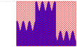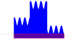The rectangle on the left has area \(3 \times 2.25 = 6.75\) square units, and encompasses the entire shaded region. The rectangle on the right has area \(3 \times 0.25 = 0.75\) square units, and is entirely contained inside the blue-shaded region. So, the area of the blue-shaded region is between 0.75 and 6.75 square units.
This is a legitimate approximation, but we can easily do much better. The shape of this graph suggests that using the areas of three rectangles would be a natural way to improve our estimate.
-
Solution 2: Let's use these rectangles instead:
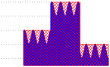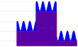In the left picture, the red area is \((1 \times 1.25)+(1 \times 2.25)+(1 \times 0.75)=4.25\) square units. In the right picture, the red area is \((1 \times 0.75)+(1 \times 1.75)+(1 \times 0.25)=2.75\) square units. So, the blue shaded area is between 2.75 and 4.25 square units.
3.
Using rectangles, find a lower and upper bound for \(\displaystyle\int_1^3 \dfrac{1}{2^x}\dee{x}\) that differ by at most 0.2 square units.
Four rectangles suffice.
The area under the curve is a number in the interval \(\left( \frac{3}{8}\left[\frac{1}{2}+\frac{1}{\sqrt{2}}\right], \frac{3}{8}\left[1+\frac{1}{\sqrt{2}}\right]\right)\text{.}\)
Remark: in the solution below, we find the appropriate approximation using trial and error. In Question 46, we take a more systematic approach.
-
Try 1: First, we can try by using a single rectangle as an overestimate, and a single rectangle as an underestimate.
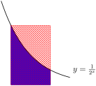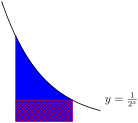The area under the curve is less than the area of the rectangle on the left (\(2 \times \frac{1}{2}=1\)) and greater than the area of the rectangle on the right (\(2 \times \frac{1}{8}=\frac{1}{4}\)). So, the area is in the range \(\left(\frac{1}{4},1\right)\text{.}\) Unfortunately, this range is too big--we need our range to have length at most 0.2. So, we refine our approximation by using more rectangles.
-
Try 2: Let's try using two rectangles each for the upper and lower bounds.
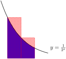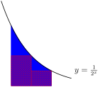The rectangles in the left picture have area \(\left(1 \times \frac{1}{2}\right)+\left(1 \times \frac{1}{4}\right)=\frac{3}{4}\text{,}\) and the rectangles in the right picture have area \(\left(1 \times \frac{1}{4}\right)+\left(1 \times \frac{1}{8}\right)=\frac{3}{8}\text{.}\) So, the area under the curve is in the interval \(\left(\frac{3}{8},\frac{3}{4}\right)\text{.}\) The length of this interval is \(\frac{3}{8}\text{,}\) and \(\frac{3}{8} \gt \frac{3}{15}=\frac{1}{5}=0.2\text{.}\) (Indeed, \(\frac{3}{8}=0.375 \gt 0.2\text{.}\)) Since the length of our interval is still bigger than 0.2, we need even more rectangles.
-
Try 3: Let's go ahead and try four rectangles each for the upper and lower estimates.
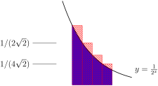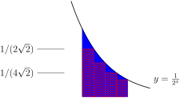The area of the rectangles on the left is:
\begin{align*} \left(\frac{1}{2}\times \frac{1}{2}\right)+ \left(\frac{1}{2}\times \frac{1}{2\sqrt{2}}\right)+ \left(\frac{1}{2}\times \frac{1}{4}\right)+ \left(\frac{1}{2}\times \frac{1}{4\sqrt{2}}\right) &\\ = \frac{3}{8}\left[1+\frac{1}{\sqrt{2}}\right],& \end{align*}and the area of the rectangles on the right is:
\begin{align*} \left(\frac{1}{2}\times \frac{1}{2\sqrt{2}}\right)+ \left(\frac{1}{2}\times \frac{1}{4}\right)+ \left(\frac{1}{2}\times \frac{1}{4\sqrt{2}}\right)+ \left(\frac{1}{2}\times \frac{1}{8}\right) &\\ = \frac{3}{8}\left[\frac{1}{2}+\frac{1}{\sqrt{2}}\right].& \end{align*}So, the area under the curve is in the interval \(\left( \frac{3}{8}\left[\frac{1}{2}+\frac{1}{\sqrt{2}}\right], \frac{3}{8}\left[1+\frac{1}{\sqrt{2}}\right]\right)\text{.}\) The length of this interval is \(\frac{3}{16}\text{,}\) and \(\frac{3}{16} \lt \frac{3}{15}=\frac{1}{5}=0.2\text{,}\) as desired. (Indeed, \(\frac{3}{16}=0.1875 \lt 0.2\text{.}\))
Note, if we choose any value in the interval \(\left( \frac{3}{8}\left[\frac{1}{2}+\frac{1}{\sqrt{2}}\right], \frac{3}{8}\left[1+\frac{1}{\sqrt{2}}\right]\right)\) as an approximation for the area under the curve, our error is no more than 0.2.
4.
Let \(f(x)\) be a function that is decreasing from \(x=0\) to \(x=5\text{.}\) Which Riemann sum approximation of \(\displaystyle\int_0^5 f(x)\dee{x}\) is the largest--left, right, or midpoint?
Try drawing a picture.
left
Since \(f(x)\) is decreasing, it is larger on the left endpoint of an interval than on the right endpoint of an interval. So, a left Riemann sum gives a larger approximation. Notice this does not depend on \(n\text{.}\)
Furthermore, the actual area \(\displaystyle\int_0^5f(x)\dee{x}\) is larger than its right Riemann sum, and smaller than its left Riemann sum.
5.
Give an example of a function \(f(x)\text{,}\) an interval \([a,b]\text{,}\) and a number \(n\) such that the midpoint Riemann sum of \(f(x)\) over \([a,b]\) using \(n\) intervals is larger than both the left and right Riemann sums of \(f(x)\) over \([a,b]\) using \(n\) intervals.
Try an oscillating function.
Many answers are possible. One example is \(f(x)=\sin x\text{,}\) \([a,b]=[0,\pi]\text{,}\) \(n=1\text{.}\) Another example is \(f(x)=\sin x\text{,}\) \([a,b]=[0,5\pi]\text{,}\) \(n=5\text{.}\)
If \(f(x)\) is always increasing or always decreasing, then the midpoint Riemann sum will be between the left and right Riemann sums. So, we need a function that goes up and down. Many examples are possible, but let's work with a familiar one: \(\sin x\text{.}\)
If our intervals have endpoints that are integer multiples of \(\pi\text{,}\) then the left and right Riemann sums will be 0, since \(\sin(0)=\sin(\pi)=\sin(2\pi)=\cdots=0\text{.}\) The midpoints of these intervals will give \(y\)-values of 1 and -1. So, for example, we can let \(f(x)=\sin x\text{,}\) \([a,b]=[0,\pi]\text{,}\) and \(n=1\text{.}\) Then the right and left Riemann sums are 0, while the midpoint Riemann sum is \(\pi\text{.}\)
We can extend the example of \(f(x)=\sin x\) to have more intervals. As long as we have more positive terms than negative, the midpoint approximation will be a positive number, and so it will be larger than both the left and right Riemann sums. So, for example, we can let \(f(x)=\sin x\text{,}\) \([a,b]=[0,5\pi]\text{,}\) and \(n=5\text{.}\) Then the midpoint Riemann sum is \(\pi-\pi+\pi-\pi+\pi=\pi\text{,}\) which is strictly larger than 0 and so it is larger than both the left and right Riemann sums.
6.
Express the following sums in sigma notation:
- \(\displaystyle 3+4+5+6+7\)
- \(\displaystyle 6+8+10+12+14\)
- \(\displaystyle 7+9+11+13+15\)
- \(\displaystyle 1+3+5+7+9+11+13+15\)
The ordering of the parts is intentional: each sum can be written by changing some small part of the sum before it.
Some of the possible answers are given, but more exist.
- \(\displaystyle \displaystyle\sum_{i=3}^7 i \quad;\quad \sum_{i=1}^5 (i+2)\)
- \(\displaystyle \displaystyle\sum_{i=3}^7 2i \quad;\quad \sum_{i=1}^5 (2i+4)\)
- \(\displaystyle \displaystyle\sum_{i=3}^7 (2i+1) \quad;\quad \sum_{i=1}^5 (2i+5)\)
- \(\displaystyle \displaystyle\sum_{i=1}^8 (2i-1) \quad;\quad \sum_{i=0}^7 (2i+1)\)
- Two possible answers are \(\displaystyle\sum_{i=3}^7 i\) and \(\displaystyle\sum_{i=1}^5 (i+2)\text{.}\) The first has simpler terms (\(i\) versus \(i+2\)), while the second has simpler indices (we often like to start at \(i=1\)). Neither is objectively better than the other, but depending on your purposes you might find one more useful.
- The terms of this sum are each double the terms of the sum from part (a), so two possible answers are \(\displaystyle\sum_{i=3}^7 2i\) and \(\displaystyle\sum_{i=1}^5 (2i+4)\text{.}\) We often want to write a sum that involves even numbers: it will be useful for you to remember that the term \(2i\) (with index \(i\)) generates evens.
-
The terms of this sum are each one more than the terms of the sum from part (b), so two possible answers are \(\displaystyle\sum_{i=3}^7 (2i+1)\) and \(\displaystyle\sum_{i=1}^5 (2i+5)\text{.}\)
In the last part, we used the expression \(2i\) to generate even numbers; \(2i+1\) will generate odds. So will the index \(2i+5\text{,}\) and indeed, \(2i+k\) for any odd number \(k\text{.}\) The choice of what you add will depend on the bounds of \(i\text{.}\)
-
This sum adds up the odd numbers from 1 to 15. From Part (c), we know that the formula \(2i+1\) is a simple way of generating odd numbers. Since our first term should be 1 and our last term should be 15, if we use \(\sum (2i+1)\text{,}\) then \(i\) should run from \(0\) to \(7\text{.}\) So, one way of expressing our sum in sigma notation is \(\displaystyle\sum_{i=0}^7 (2i+1)\text{.}\)
Sometimes we like our sum to start at \(i=1\) instead of \(i=0\text{.}\) If this is our desire, we can use \(2i-1\) as our terms, and let \(i\) run from 1 to 8. This gives us another way of expressing our sum: \(\displaystyle\sum_{i=1}^8 (2i-1)\text{.}\)
7.
Express the following sums in sigma notation:
- \(\displaystyle \frac{1}{3}+\frac{1}{9}+\frac{1}{27}+\frac{1}{81}\)
- \(\displaystyle \frac{2}{3}+\frac{2}{9}+\frac{2}{27}+\frac{2}{81}\)
- \(\displaystyle -\frac{2}{3}+\frac{2}{9}-\frac{2}{27}+\frac{2}{81}\)
- \(\displaystyle \frac{2}{3}-\frac{2}{9}+\frac{2}{27}-\frac{2}{81}\)
If we raise \(-1\) to an even power, we get \(+1\text{,}\) and if we raise it to an odd power, we get \(-1\text{.}\)
Some answers are below, but others are possible.
- \(\displaystyle\sum_{i=1}^4 \frac{1}{3^i}\) and \(\displaystyle\sum_{i=1}^4 \left(\frac{1}{3}\right)^i\)
- \(\displaystyle\sum_{i=1}^4 \frac{2}{3^i}\) and \(\displaystyle\sum_{i=1}^4 2\left(\frac{1}{3}\right)^i\)
- \(\displaystyle\sum_{i=1}^4(-1)^i \frac{2}{3^i}\) and \(\displaystyle\sum_{i=1}^4 \frac{2}{(-3)^i}\)
- \(\displaystyle\sum_{i=1}^4(-1)^{i+1} \frac{2}{3^i}\) and \(\displaystyle\sum_{i=1}^4 -\frac{2}{(-3)^i}\)
- The denominators are successive powers of three, so one way of writing this is \(\displaystyle\sum_{i=1}^4 \frac{1}{3^i}\text{.}\) Equivalently, the terms we're adding are powers of \(1/3\text{,}\) so we can also write \(\displaystyle\sum_{i=1}^4 \left(\frac{1}{3}\right)^i\text{.}\)
- This sum is obtained from the sum in (a) by multiplying each term by two, so we can write \(\displaystyle\sum_{i=1}^4 \frac{2}{3^i}\) or \(\displaystyle\sum_{i=1}^4 2\left(\frac{1}{3}\right)^i\text{.}\)
- The difference between this sum and the previous sum is its alternating sign, minus-plus-minus-plus. This behaviour appears when we raise a negative number to successive powers. We can multiply each term by \((-1)^i\text{,}\) or we can slip a negative into the number that is already raised to the power \(i\text{:}\) \(\displaystyle\sum_{i=1}^4(-1)^i \frac{2}{3^i}\,,\) or \(\displaystyle\sum_{i=1}^4 \frac{2}{(-3)^i}\text{.}\)
-
This sum is the negative of the sum in part (c), so we can simply multiply each term by negative one: \(\displaystyle\sum_{i=1}^4(-1)^{i+1} \frac{2}{3^i}\) or \(\displaystyle\sum_{i=1}^4 -\frac{2}{(-3)^i}\text{.}\)
Be careful with the second form: a common mistake is to think that \(-\dfrac{2}{(-3)^i} = \dfrac{2}{3^i}\text{,}\) but these are not the same.
8.
Express the following sums in sigma notation:
- \(\displaystyle \frac{1}{3}+\frac{1}{3}+\frac{5}{27}+\frac{7}{81}+\frac{9}{243}\)
- \(\displaystyle \frac{1}{5}+\frac{1}{11}+\frac{1}{29}+\frac{1}{83}+\frac{1}{245}\)
- \(\displaystyle 1000+200+30+4+\frac{1}{2}+\frac{3}{50}+\frac{7}{1000}\)
Sometimes a little anti-simplification can make the pattern more clear.
- Re-write as \(\frac{1}{3}+\frac{3}{9}+\frac{5}{27}+\frac{7}{81}+\frac{9}{243}\text{.}\)
- Compare to the sum in the hint for (a).
- Re-write as \(1\cdot1000+2\cdot 100+3\cdot10+\frac{4}{1}+\frac{5}{10}+\frac{6}{100}+\frac{7}{1000}\text{.}\)
- \(\displaystyle \displaystyle\sum_{i=1}^5 \frac{2i-1}{3^i}\)
- \(\displaystyle \displaystyle\sum_{i=1}^5 \frac{1}{3^i+2}\)
- \(\displaystyle\sum_{i=1}^7 i\cdot10^{4-i}\) and \(\displaystyle\sum_{i=1}^7 \frac{i}{10^{i-4}}\)
-
If we re-write the second term as \(\frac{3}{9}\) instead of \(\frac{1}{3}\text{,}\) our sum becomes:
\begin{equation*} \frac{1}{3}+\frac{3}{9}+\frac{5}{27}+\frac{7}{81}+\frac{9}{243} \end{equation*}The numerators are the first five odd numbers, and the denominators are the first five positive powers of 3. We learned how to generate odd numbers in Question 6, and we learned how to generate powers of three in Question 7. Combining these, we can write our sum as \(\displaystyle\sum_{i=1}^5 \frac{2i-1}{3^i}\text{.}\)
- The denominators of these terms differ from the denominators of part (a) by precisely two, while the numerators are simply 1. So, we can modify our previous answer: \(\displaystyle\sum_{i=1}^5 \frac{1}{3^i+2}\text{.}\)
- Let's re-write the sum to make the pattern clearer.
If we let the red numbers be our index \(i\text{,}\) this gives us the expression \(\displaystyle\sum_{i=1}^7 i\cdot10^{4-i}\,.\) Equivalently, we can write \(\displaystyle\sum_{i=1}^7 \frac{i}{10^{i-4}}\,.\)
9.
Evaluate the following sums. You might want to use the formulas from Theorems 5 and 6.
- \(\displaystyle \displaystyle\sum_{i=0}^{100} \left(\dfrac{3}{5}\right)^i\)
- \(\displaystyle \displaystyle\sum_{i=50}^{100} \left(\dfrac{3}{5}\right)^i\)
- \(\displaystyle \displaystyle\sum_{i=1}^{10} \left(i^2-3i+5\right)\)
- \(\displaystyle\sum_{n=1}^{b}\left[ \left(\frac{1}{e}\right)^n+en^3\right]\text{,}\) where \(b\) is some integer greater than 1.
- (a), (b) These are geometric sums.
- (c) You can write this as three separate sums.
- (d) You can write this as two separate sums. Remember that \(e\) is a constant. Don't be thrown off by the index being \(n\) instead of \(i\text{.}\)
- \(\displaystyle \dfrac{5}{2}\left[1-\left(\dfrac{3}{5}\right)^{101}\right]\)
- \(\displaystyle \dfrac{5}{2}\left(\dfrac{3}{5}\right)^{50}\left[1-\left(\dfrac{3}{5}\right)^{51}\right]\)
- \(\displaystyle 270\)
- \(\displaystyle \dfrac{1-\left(\frac{1}{e}\right)^b}{e-1}+\dfrac{e}{4}\left[b(b+1)\right]^2\)
- Using Theorem 6.1.6, part (a) with \(a=1\text{,}\) \(r=\frac{3}{5}\) and \(n=100\text{:}\)\begin{equation*} \sum_{i=0}^{100} \left(\dfrac{3}{5}\right)^i = \dfrac{1-\left(\frac{3}{5}\right)^{101}}{1-\frac{3}{5}} = \dfrac{5}{2}\left[1-\left(\frac{3}{5}\right)^{101}\right] \end{equation*}
-
We want to use Theorem 6.1.6, part (a) again, but our sum doesn't start at \(\left(\frac{3}{5}\right)^0=1\text{.}\) We have two options: factor out the leading term, or use the difference of two sums that start where we want them to.
-
Solution 1: In this solution, we'll make our sum start at 1 by factoring out the leading term. We wrote our work out the long way (expanding the sigma into “dot-dot-dot” notation) for clarity, but it's faster to do the algebra in sigma notation all the way through.
\begin{align*} \displaystyle\sum_{i=50}^{100} \left(\dfrac{3}{5}\right)^i&= \left(\dfrac{3}{5}\right)^{50}+ \left(\dfrac{3}{5}\right)^{51}+ \left(\dfrac{3}{5}\right)^{52}+\cdots+ \left(\dfrac{3}{5}\right)^{100}\\ &= \left(\dfrac{3}{5}\right)^{50}\left[1+ \left(\dfrac{3}{5}\right)+ \left(\dfrac{3}{5}\right)^{2}+\cdots+ \left(\dfrac{3}{5}\right)^{50}\right]\\ &= \left(\dfrac{3}{5}\right)^{50}\dfrac{1-\left(\frac{3}{5}\right)^{51}}{1-\frac{3}{5}}\\ &=\dfrac{5}{2}\left(\dfrac{3}{5}\right)^{50}\left[1-\left(\frac{3}{5}\right)^{51}\right]. \end{align*} -
Solution 2: In this solution, we write our given expression as the difference of two sums, both starting at \(i=0\text{.}\)
\begin{align*} \displaystyle\sum_{i=50}^{100} \left(\dfrac{3}{5}\right)^i&= \displaystyle\sum_{i=0}^{100} \left(\dfrac{3}{5}\right)^i- \displaystyle\sum_{i=0}^{49} \left(\dfrac{3}{5}\right)^i\\ &=\dfrac{1-\left(\frac{3}{5}\right)^{101}}{1-\frac{3}{5}} - \dfrac{1-\left(\frac{3}{5}\right)^{50}}{1-\frac{3}{5}}\\ &=\dfrac{5}{2}\left[\left(\frac{3}{5}\right)^{50}-\left(\frac{3}{5}\right)^{101}\right]\\ &=\dfrac{5}{2}\left(\dfrac{3}{5}\right)^{50}\left[1-\left(\frac{3}{5}\right)^{51}\right]. \end{align*}
-
- Before we can use the equations in Theorem 6.1.6, we'll need to do a little simplification.\begin{align*} \displaystyle\sum_{i=1}^{10} \left(i^2-3i+5\right)&= \displaystyle\sum_{i=1}^{10} i^2 +\displaystyle\sum_{i=1}^{10} -3i +\displaystyle\sum_{i=1}^{10}5\\ &= \displaystyle\sum_{i=1}^{10} i^2 -3\displaystyle\sum_{i=1}^{10} i +5\displaystyle\sum_{i=1}^{10}1\\ &= \frac{1}{6}(10)(11)(21) -3\left(\frac{1}{2}(10\cdot 11)\right) +5\cdot 10\\ &=270 \end{align*}
- As in part (c), we'll simplify first. The first part (shown here in red) is a geometric sum, but it does not start at \(1=\left(\frac{1}{e}\right)^0\text{.}\)\begin{align*} \displaystyle\sum_{n=1}^{b}\left[\textcolor{red}{ \left(\frac{1}{e}\right)^n} +\,\textcolor{blue}{en^3}\right]&= \textcolor{red}{\displaystyle\sum_{n=1}^{b} \left(\frac{1}{e}\right)^n} + \textcolor{blue}{ \displaystyle\sum_{n=1}^{b}en^3}\\ &=\textcolor{red}{\displaystyle\sum_{n=0}^{b} \left(\frac{1}{e}\right)^{n}-1} + \textcolor{blue}{e\displaystyle\sum_{n=1}^{b}n^3}\\ &=\textcolor{red}{\dfrac{1-\left(\frac{1}{e}\right)^{b+1}}{1-\frac{1}{e}}-1} + \textcolor{blue}{e\left[\frac{1}{2}b(b+1)\right]^2}\\ &=\textcolor{red}{\dfrac{\frac{1}{e}-\left(\frac{1}{e}\right)^{b+1}}{1-\frac{1}{e}}} + \textcolor{blue}{e\left[\frac{1}{2}b(b+1)\right]^2}\\ &=\textcolor{red}{\dfrac{1-\left(\frac{1}{e}\right)^b}{e-1}}+\textcolor{blue}{\frac{e}{4}\left[b(b+1)\right]^2} \end{align*}
10.
Evaluate the following sums. You might want to use the formulas from Theorem 6.1.6.
- \(\displaystyle \displaystyle\sum_{i=50}^{100} (i-50)+\displaystyle\sum_{i=0}^{50} i\)
- \(\displaystyle \displaystyle\sum_{i=10}^{100} \left(i-5\right)^3\)
- \(\displaystyle \displaystyle\sum_{n=1}^{11} (-1)^n\)
- \(\displaystyle \displaystyle\sum_{n=2}^{11} (-1)^{2n+1}\)
- Write out the terms of the two sums.
- A change of index is an easier option than expanding the cubic.
- Which terms cancel?
- Remember \(2n+1\) is odd for every integer \(n\text{.}\) The index starts at \(n=2\text{,}\) not \(n=1\text{.}\)
- \(\displaystyle 50\cdot 51=2550\)
- \(\displaystyle \left[\frac{1}{2}(95)(96)\right]^2-\left[\frac{1}{2}(4)(5)\right]^2\)
- \(\displaystyle -1\)
- \(\displaystyle -10\)
- The two pieces are very similar, which we can see by changing the index, or expanding them out:\begin{align*} &\displaystyle\sum_{i=50}^{100} (i-50)+\displaystyle\sum_{i=0}^{50} i\\ &= \left(0+1+2+\cdots + 50\right)+\left(0+1+2+\cdots + 50\right)\\ &=\left(1+2+\cdots + 50\right)+\left(1+2+\cdots + 50\right)\\ &=2\left(1+2+\cdots + 50\right)\\ &=2\sum_{i=1}^{50} i\\ &= 2\left(\frac{50\cdot 51}{2}\right)=50\cdot 51=2550 \end{align*}
- If we expand \((i-5)^3 = i^3-15i^2+75i-225\text{,}\) we can break the sum into four parts, and evaluate each separately. However, it is much simpler to change the index and make the term \((i-5)^3\) into \(i^3\text{.}\)\begin{align*} \displaystyle\sum_{i=10}^{100} \left(i-5\right)^3&= 5^3+6^3+7^3+\cdots +95^3\\ \end{align*}
We have a formula to evaluate the sum of cubes if they start at \(1\text{,}\) so we turn our expression into the difference of two sums starting at 1:
\begin{align*} &= \left[1^3+2^3+3^3+4^3+5^3+6^3+7^3+\cdots +95^3\right]\\ &\hskip0.5in-\left[1^3+2^3+3^3+4^3\right]\\ &=\displaystyle\sum_{i=1}^{95} i^3 - \displaystyle\sum_{i=1}^4 i^3\\ &=\left[\frac{1}{2}(95)(96)\right]^2-\left[\frac{1}{2}(4)(5)\right]^2\,. \end{align*} -
Notice every two terms cancel with each other, since the sum is \((-1)+(+1)\text{,}\) etc. Then the terms \(n=1\) through \(n=10\) cancel, and we're left only with the final term, \((-1)^{11}=-1\text{.}\)
Written out more explicitly:
\begin{align*} &\displaystyle\sum_{n=1}^{11} (-1)^{n}=-1+1-1+1-1+1-1+1-1+1-1\\ &=[-1+1]+[-1+1]+[-1+1]+[-1+1]+[-1+1]-1\\ &=0+0+0+0+0-1=-1. \end{align*} - For every integer \(n\text{,}\) \(2n+1\) is odd, so \((-1)^{2n+1}=-1\text{.}\) Then \(\displaystyle\sum_{n=2}^{11} (-1)^{2n+1} =\displaystyle\sum_{n=2}^{11} -1 =-10\text{.}\)
11.
In the picture below, draw in the rectangles whose (signed) area is being computed by the midpoint Riemann sum \(\displaystyle\sum_{i=1}^4 \dfrac{b-a}{4}\cdot f\left(a+\left(i-\frac{1}{2}\right)\dfrac{b-a}{4}\right)\text{.}\)
Since the sum adds four pieces, there will be four rectangles. However, one might be extremely small.
The index of the sum runs from 1 to 4: the first, second, third, and fourth rectangles. So, we have four rectangles in our Riemann sum. Let's start by drawing in the intervals along the \(x\)-axis taken up by these four rectangles. Note each has the same width: \(\dfrac{b-a}{4}\text{.}\)
Since this is a midpoint Riemann sum, the height of each rectangle is given by the \(y\)-value of the function in the midpoint of the interval. So, now let's find the height of the function at the midpoints of each of the four intervals.
The left-most interval has a height of about 0, so it gives a “trivial” rectangle with no height and no area. The middle two intervals have rectangles of about the same height, and the right-most interval has the highest rectangle.
12. M105 2015A.
\(\displaystyle \sum_{k=1}^4 f(1+k)\cdot 1\) is a left Riemann sum for a function \(f(x)\) on the interval \([a,b]\) with \(n\) subintervals. Find the values of \(a\text{,}\) \(b\) and \(n\text{.}\)
Write out the general formula for the left Riemann sum from Definition 6.1.11 and choose \(a\text{,}\) \(b\) and \(n\) to make it match the given sum.
\(n=4\text{,}\) \(a=2\text{,}\) and \(b=6\)
In general, the {left} Riemann sum for the integral \(\int_a^b f(x)\,\,\dee{x}\) is of the form
- To get the limits of summation to match the given sum, we need \(n=4\text{.}\)
- Then to get the factor multiplying \(f\) to match that in the given sum, we need \(\frac{b-a}{n}=1\text{,}\) so \(b-a=4\text{.}\)
- Finally, to get the argument of \(f\) to match that in the given sum, we need\begin{gather*} a+(k-1)\frac{b-a}{n}=a-\frac{b-a}{n} +k\frac{b-a}{n}=1+k \end{gather*}Subbing in \(n=4\) and \(b-a=4\) gives \(a-1 +k=1+k\text{,}\) so \(a=2\) and \(b=6\text{.}\)
13.
Draw a picture illustrating the area given by the following Riemann sum.
Since the sum runs from 1 to 3, there are three intervals. Suppose \(2 = \Delta x = \frac{b-a}{n}\text{.}\) You may assume the sum given is a right Riemann sum (as opposed to left or midpoint).
One answer is below, but other interpretations exist.
The general form of a Riemann sum is \(\displaystyle\sum_{i=1}^n \Delta x \cdot f(x_i^*)\text{,}\) where \(\Delta x = \frac{b-a}{n}\) is the width of each rectangle, and \(f(x_i^*)\) is the height.
There are different ways to interpret the given sum as a Riemann sum. The most obvious is given in Solution 1. You may notice that we make some convenient assumptions in this solution about values for \(\Delta x\) and \(a\text{,}\) and we assume the sum is a right Riemann sum. Other visualizations of the sum arise from making more exotic choices. Some of these are explored in Solutions 2-4.
All cases have three rectangles, and the three rectangles will have the same areas: 98, 162, and 242 square units, respectively. This is because the terms of the given sum simplify to \(98+162+242\text{.}\)
-
Solution 1:
- Because the index runs from \(1\) to \(3\text{,}\) there are three intervals: \(n=3\text{.}\)
- Looking at our sum, it seems reasonable to interpret \(\Delta x = 2\text{.}\) Then, since \(n=3\text{,}\) we conclude \(\frac{b-a}{3}=2\text{,}\) hence \(b-a=6\text{.}\)
- If \(\Delta x = 2\text{,}\) then \(f(x_i^*)=\left(5+2i\right)^2\text{.}\) Recall that \(x_i^*\) is the \(x\)-coordinate we use to decide the height of the \(i\)th rectangle. In a right Riemann sum, \(x_i^* = a+i\cdot\Delta x\text{.}\) So, using \(2=\Delta x\text{,}\) we can let \(f(x_i^*)=f(a+2i)=\left(5+2i\right)^2\text{.}\) This fits with the function \(f(x)=x^2\text{,}\) and \(a=5\text{.}\)
- Since \(b-a=6\text{,}\) and \(a=5\text{,}\) this tells us \(b=11\)
To sum up, we can interpret the Riemann sum as a right Riemann sum, with three intervals, of the function \(f(x)=x^2\) from \(x=5\) to \(x=11\text{.}\)

-
Solution 2: We could have chosen a different value for \(\Delta x\text{.}\)
- The index of the sum runs from 1 to 3, so we have \(n=3\text{.}\)
- We didn't have to interpret \(\Delta x\) as 2--that was just the path of least resistance. We could have chosen it to be any other number--for the sake of argument, let's say \(\Delta x=10\text{.}\) (Positive numbers are easiest to interpret, but negatives are technically allowed as well.)
- Then \(10=\frac{b-a}{n}=\frac{b-a}{3}\text{,}\) so \(b-a=30\text{.}\)
- Let's use the paradigm of a right Riemann sum, and match up the terms of the sum given in the problem to the terms in the definition:\begin{align*} \Delta x \cdot f\left(a+i\cdot \Delta x\right)&= 2\cdot\left(5+2i\right)^2\\ 10 \cdot f(a+10i)&= 2\cdot\left(5+2i\right)^2\\ f(a+10i)&=\frac{1}{5}\cdot\left(5+2i\right)^2\\ f(a+10i)&=\frac{1}{5}\cdot\left(5+\frac{1}{5}\cdot 10i\right)^2 \end{align*}
- The easiest value of \(a\) in this case is \(a=0\text{.}\) Then \(f(\textcolor{red}{10i}) = \frac{1}{5}\cdot\left(5+\frac{1}{5}\cdot \textcolor{red}{10i}\right)^2\text{,}\) so \(f(\textcolor{red}{x})= \frac{1}{5}\cdot\left(5+\frac{1}{5}\cdot \textcolor{red}{x}\right)^2\text{.}\)
- If \(a=0\) and \(b-a=30\text{,}\) then \(b=30\text{.}\)
-
To sum up: \(n=3\text{,}\) \(a=0\text{,}\) \(b=30\text{,}\) \(\Delta x = 10\text{,}\) and \(f(x)= \frac{1}{5}\cdot\left(5+\frac{x}{5} \right)^2\text{.}\)
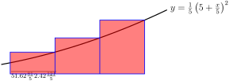By changing \(\Delta x\text{,}\) we changed the widths of the rectangles. The rectangles in this picture are wider and shorter than the rectangles in Solution 1. Their areas are the same: 98, 162, and 242.
-
Solution 3: We could have chosen a different value of \(a\text{.}\)
- Suppose \(\Delta x = 2\text{,}\) and we interpret our sum as a right Riemann sum, but we didn't assume \(a=5\text{.}\) We could have chosen \(a\) to be any number--say, \(a=1\text{.}\)
- Let's match up what we're given in the problem to what we're given as a definition:\begin{align*} \Delta x \cdot f\left(a+i\cdot\Delta x\right)&=2\cdot\left(5+2i\right)^2\\ 2 \cdot f\left(1+2i\right)&=2\cdot\left(5+2i\right)^2\\ f\left(1+2i\right)&=\left(5+2i\right)^2\\ f\left(1+2i\right)&=\left(4+1+2i\right)^2 \end{align*}
- Since \(f(\textcolor{red}{1+2i})=\left(4+\textcolor{red}{1+2i}\right)^2\text{,}\) we have \(f(\textcolor{red}{x})=\left(4+\textcolor{red}{x}\right)^2\)
- Since \(a=1\) and \(\frac{b-a}{3}=2\text{,}\) in this case \(b=7\text{.}\)
-
To sum up: \(n=3\text{,}\) \(a=1\text{,}\) \(b=7\text{,}\) \(\Delta x=2\text{,}\) and \(f(x)=(4+x)^2\text{.}\)

This picture is a lot like the picture in Solution 1, but shifted to the left. By changing \(a\text{,}\) we changed the left endpoint of our region.
-
Solution 4: We could have chosen a different kind of Riemann sum.
- We didn't have to assume that we were dealing with a right Riemann sum. Suppose \(\Delta x =2\text{,}\) and we have a midpoint Riemann sum.
- Let's match up what we're given in the problem with what we're given in the definition:\begin{align*} \Delta x \cdot f\left(a+\left(i-\tfrac{1}{2}\right)\Delta x\right)&=2\cdot\left(5+2i\right)^2\\ 2 \cdot f\left(a+\left(i-\tfrac{1}{2}\right)2\right)&=2\cdot\left(5+2i\right)^2\\ f\left(a+\left(i-\tfrac{1}{2}\right)2\right)&=\left(5+2i\right)^2\\ f\left(a+2i-1\right)&=\left(5+2i\right)^2\\ f\left((a-1)+2i\right)&=\left(5+2i\right)^2 \end{align*}
- It is now convenient to set \(a-1=5\text{,}\) hence \(a=6\text{.}\)
- Then \(f(\textcolor{red}{5+2i})=(\textcolor{red}{5+2i})^2\text{,}\) so \(f(\textcolor{red}{x})=\textcolor{red}{x}^2\)
- Since \(2=\frac{b-a}{3}\) and \(a=6\text{,}\) we see \(b=12\text{.}\)
-
To sum up: \(n=3\text{,}\) \(a=6\text{,}\) \(b=12\text{,}\) \(\Delta x = 2\text{,}\) and \(f(x)=x^2\text{.}\)
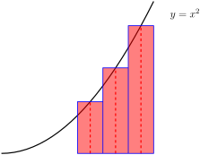By choosing to interpret our sum as a midpoint Riemann sum instead of a right Riemann sum, we changed where our rectangles intersect the graph \(y=f(x)\text{:}\) instead of the graph hitting the right corner of the rectangle, it hits in the middle.
14.
Draw a picture illustrating the area given by the following Riemann sum.
Let \(\Delta x = \dfrac{\pi}{20}\text{.}\) Then what is \(b-a\text{?}\)
Many interpretations are possible--see the solution to Question 13 for a more thorough discussion--but the most obvious is given below.
Many interpretations are possible--see the solution to Question 13 for a more thorough discussion--but the most obvious is given below. Recall the definition of a left Riemann sum:
We chose a left Riemann sum instead of right or midpoint because our given sum has \((i-1)\) in it, rather than \((i-\frac{1}{2})\) or simply \(i\text{.}\)
- Since the sum has five terms (\(i\) runs from 1 to 5), there are 5 rectangles. That is, \(n=5\text{.}\)
- In the definition of the Riemann sum, note that the term \(\Delta x\) appears twice: once multiplied by the entire term, and once multiplied by \(i-1\text{.}\) So, a convenient choice for \(\Delta x\) is \(\frac{\pi}{20}\text{,}\) because this is the constant that is both multiplied at the start of the term, and multiplied by \(i-1\text{.}\)
- Since \(\dfrac{\pi}{20}=\Delta x = \dfrac{b-a}{n} = \dfrac{b-a}{5}\text{,}\) we see \(b-a=\dfrac{5\pi}{20}=\dfrac{\pi}{4}\text{.}\)
- We match the terms in the definition with the terms in the problem:\begin{align*} f(a+(i-1)\Delta x) & = \tan\left(\frac{\pi (i-1)}{20}\right)\\ f\left(a+(i-1)\frac{\pi}{20}\right) & = \tan\left((i-1)\frac{\pi }{20}\right) \end{align*}So, we choose \(a=0\) and \(f(x) = \tan x\text{.}\)
- Since \(a=0\) and \(b-a=\frac{\pi}{4}\text{,}\) we see \(b=\frac{\pi}{4}\text{.}\)
We note that the first rectangle of the five is a “trivial” rectangle, with height (and area) 0.
15. M105 2013A.
Fill in the blanks with right, left, or midpoint; an interval; and a value of n.
- \(\sum\limits_{k=0}^3 f (1.5 + k) \cdot 1\) is a \(\underline{\ \ \ \ \ \ \ \ \ \ \ \ }\) Riemann sum for \(f\) on the interval \([\,\underline{\ \ \ \ \ \ }\ ,\ \underline{\ \ \ \ \ \ }\,]\) with \(n =\underline{\ \ \ \ \ }\text{.}\)
Notice that the index starts at \(k=0\text{,}\) instead of \(k=1\text{.}\) Write out the given sum explicitly without using summation notation, and sketch where the rectangles would fall on a graph of \(y=f(x)\text{.}\)
Then try to identify \(b-a\text{,}\) and \(n\text{,}\) followed by “right”, “left”, or “midpoint”, and finally \(a\text{.}\)
Three answers are possible. It is a midpoint Riemann sum for \(f\) on the interval \([1,5]\) with \(n =4\text{.}\) It is also a left Riemann sum for \(f\) on the interval \([1.5,5.5]\) with \(n =4\text{.}\) It is also a right Riemann sum for \(f\) on the interval \([0.5,4.5]\) with \(n =4\text{.}\)
Since there are four terms in the sum, \(n=4\text{.}\) (Note the sum starts at \(k=0\text{,}\) instead of \(k=1\text{.}\)) Since the function is multiplied by 1, \(1=\Delta x=\dfrac{b-a}{n}=\dfrac{b-a}{4}\text{,}\) hence \(b-a=4\text{.}\)
We can choose to view the given sum as a left, right, or midpoint Riemann sum. The choice we make determines the interval. Note that the heights of the rectangles are determined when \(x = 1.5,\, 2.5,\, 3.5,\) and \(4.5\text{.}\)
-
Option 1: right Riemann sum. If our sum is a right Riemann sum, then we take the heights of the rectangles from the right endpoint of each interval.
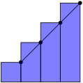Then \(a=0.5\) and \(b=4.5\text{.}\) Therefore: \(\sum\limits_{k=0}^3 f (1.5 + k) \cdot 1\) is a right Riemann sum on the interval \([0.5,4.5]\) with \(n=4\text{.}\)
-
Option 2: left Riemann sum. If our sum is a left Riemann sum, then we take the heights of the rectangles from the left endpoint of each interval.

Then \(a=1.5\) and \(b=5.5\text{.}\) Therefore: \(\sum\limits_{k=0}^3 f (1.5 + k) \cdot 1\) is a left Riemann sum on the interval \([1.5,5.5]\) with \(n=4\text{.}\)
-
Option 3: midpoint Riemann sum. If our sum is a midpoint Riemann sum, then we take the heights of the rectangles from the midpoint of each interval.
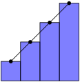Then \(a=1\) and \(b=5\text{.}\) Therefore: \(\sum\limits_{k=0}^3 f (1.5 + k) \cdot 1\) is a midpoint Riemann sum on the interval \([1,5]\) with \(n=4\text{.}\)
16.
Evaluate the following integral by interpreting it as a signed area, and using geometry:
17.
Evaluate the following integral by interpreting it as a signed area, and using geometry:
There is one triangle of positive area, and one of negative area.
\(\dfrac{21}{2}\)
There is a positive and a negative portion of this area. The positive area is a triangle with base 5 and height 5, so area \(\dfrac{25}{2}\) square units. The negative area is a triangle with base \(2\) and height \(2\text{,}\) so negative area \(\dfrac{4}{2}=2\) square units. So, the net area is \(\dfrac{25}{2}-\dfrac{4}{2}=\dfrac{21}{2}\) square units.
Remember that a definite integral is a signed area between a curve and the \(x\)-axis. We'll spend a lot of time learning strategies for evaluating definite integrals, but we already know lots of ways to find area of geometric shapes. In Questions 28 through 33, use your knowledge of geometry to find the signed areas described by the integrals given.
18. M105 2014A.
Use sigma notation to write the midpoint Riemann sum for \(f(x)=x^8\) on \([5,15]\) with \(n=50\text{.}\) Do not evaluate the Riemann sum.
Review Definition 6.1.11.
\(\sum\limits_{i=1}^{50} \Big(5+\big(i-\frac{1}{2}\big)\frac{1}{5}\Big)^8 \ \frac{1}{5}\)
In general, the midpoint Riemann sum is given by
In this problem we are told that \(f(x)=x^8\text{,}\) \(a=5\text{,}\) \(b=15\) and \(n=50\text{,}\) so that \(\De x = \frac{b-a}{n} = \frac{1}{5}\) and the desired Riemann sum is:
19. 2016Q1.
Estimate \(\displaystyle\int_{-1}^5 x^3\,\,\dee{x}\) using three approximating rectangles and left hand end points.
\(54\)
The given integral has interval of integration going from \(a=-1\) to \(b=5\text{.}\) So when we use three approximating rectangles, all of the same width, the common width is \(\Delta x=\frac{b-a}{n} = 2\text{.}\) The first rectangle has left endpoint \(x_0=a=-1\text{,}\) the second has left hand endpoint \(x_1=a+\Delta x=1\text{,}\) and the third has left hand end point \(x_2=a+2\Delta x=3\text{.}\) So
20. 2016Q1.
Let \(f\) be a function on the whole real line. Express \(\displaystyle\int_{-1}^{7}f(x)\,\,\dee{x}\) as a limit of Riemann sums, using the right endpoints.
You'll want the limit as \(n\) goes to infinity of a sum with \(n\) terms. If you're having a hard time coming up with the sum in terms of \(n\text{,}\) try writing a sum with a finite number of terms of your choosing. Then, think about how that sum would change if it had \(n\) terms.
\(\displaystyle\int_{-1}^{7}f(x)\,\,\dee{x}=\displaystyle\lim_{n\to\infty}\displaystyle\sum_{i=1}^{n} f\left(-1+\frac{8i}{n}\right)\frac{8}{n}\)
In the given integral, the domain of integration runs from \(a=-1\) to \(b=7\text{.}\) So, we have \(\Delta x = \frac{(b-a)}{n}= \frac{(7-(-1))}{n} = \frac{8}{n}\text{.}\) The left-hand end of the first subinterval is at \(x_0=a=-1\text{.}\) So, the right-hand end of the \(i^{\rm th}\) interval is at \(x_i^* = -1+\frac{8i}{n}\text{.}\) So:
21. 2016Q1.
The value of the following limit is equal to the area below a graph of \(y=f(x)\text{,}\) integrated over the interval \([0,b]\text{:}\)
Find \(f(x)\) and \(b\text{.}\)
The main step is to express the given sum as the right Riemann sum,
Don't be afraid to guess \(\De x\) and \(f(x\)) (review Definition 6.1.11). Then write out explicitly \(\sum\limits_{i=1}^{n} f(a+i\De x)\Delta x\) with your guess substituted in, and compare the result with the given sum. Adjust your guess if they don't match.
\(f(x) = \sin^2 (2 + x)\) and \(b=4\)
We identify the given sum as the right Riemann sum \(\sum\limits_{i=1}^{n} f(a+i\De x)\Delta x\text{,}\) with \(a=0\) (that's specified in the statement of the question). Since \(\frac{4}{n}\) is multiplied in every term, and is also multiplied by \(i\text{,}\) we let \(\Delta x = \frac{4}{n}\text{.}\) Then \(x_i^* = a+i\De x=\frac{4i}{n}\) and \(f(x) = \sin^2 (2 + x)\text{.}\) So, \(b=a+n\De x=0+n\cdot\frac{4}{n}=4\text{.}\)
22. M105 2102A.
For a certain function \(f(x)\text{,}\) the following equation holds:
Find \(f(x)\text{.}\)
The main step is to express the given sum as the right Riemann sum \(\sum\limits_{k=1}^{n} f(a+k\De x)\Delta x\text{.}\) Don't be afraid to guess \(\De x\) and \(f(x\)) (review Definition 6.1.11). Then write out explicitly \(\sum\limits_{k=1}^{n} f(a+k\De x)\Delta x\) with your guess substituted in, and compare the result with the given sum. Adjust your guess if they don't match.
\(f(x)=x\sqrt{1-x^2}\)
The given sum is of the form
with \(\De x=\frac{1}{n}\text{,}\) \(a=0\text{,}\) \(x_k^*=\frac{k}{n}=a+k\De x\) and \(f(x)=x\sqrt{1-x^2}\text{.}\) Since \(x_0^*=0\) and \(x_n^*=1\text{,}\) the right hand side is the definition (using the right Riemann sum) of \(\int_0^1 f(x)\,\,\dee{x} \text{.}\)
23. 2016Q1.
Express \(\displaystyle\lim_{n\to\infty}\displaystyle\sum_{i=1}^{n} \frac{3}{n} e^{-i/n} \cos\left(\frac{3i}{n}\right)\) as a definite integral.
The main step is to express the given sum in the form \(\sum_{i=1}^{n} f(x_i^*)\Delta x\text{.}\) Don't be afraid to guess \(\De x\text{,}\) \(x_i^*\) (for either a left or a right or a midpoint sum — review Definition 6.1.11) and \(f(x\)). Then write out explicitly \(\sum_{i=1}^{n} f(x_i^*)\Delta x\) with your guess substituted in, and compare the result with the given sum. Adjust your guess if they don't match.
\(\int_0^3 e^{-x/3}\cos(x)\,\,\dee{x}\)
As \(i\) ranges from \(1\) to \(n\text{,}\) \(3i/n\) range from \(3/n\) to \(3\) with jumps of \(\De x=3/n\text{,}\) so this is
where \(x_i^* = 3i/n\text{,}\) \(f(x) = e^{-x/3}\cos(x)\text{,}\) \(a=x_0=0\) and \(b=x_n=3\text{.}\) Thus
24. 2012A, 2014D.
Let \(\displaystyle R_n= \sum_{i=1}^{n} \frac{i e^{i/n}}{n^2}\text{.}\) Express \(\displaystyle\lim_{n\to\infty}R_n\) as a definite integral. Do not evaluate this integral.
The main step is to express the given sum in the form \(\sum\limits_{i=1}^{n} f(x_i^*)\Delta x\text{.}\) Don't be afraid to guess \(\De x\text{,}\) \(x_i^*\) (probably, based on the symbol \(R_n\text{,}\) assuming we have a right Riemann sum — review Definition 6.1.11) and \(f(x\)). Then write out explicitly \(\sum\limits_{i=1}^{n} f(x_i^*)\Delta x\) with your guess substituted in, and compare the result with the given sum. Adjust your guess if they don't match.
\(\displaystyle\int_0^1 x e^{x}\,\,\dee{x}\)
As \(i\) ranges from \(1\) to \(n\text{,}\) the exponent \(\frac{i}{n}\) ranges from \(\frac{1}{n}\) to \(1\) with jumps of \(\De x=\frac{1}{n}\text{.}\) So let's try \(x_i^* =\frac{ i}{n}\text{,}\) \(\Delta x=\frac{1}{n}\text{.}\) Then:
with \(f(x)= x e^x\text{,}\) and the limit
Since we chose \(x_i^* = \frac{i}{n} = 0+i\De x\text{,}\) we let \(a=0\text{.}\) Then \(\frac{1}{n}=\De x = \frac{b-a}{n}=\frac{b}{n}\) tells us \(b=1\text{.}\) Thus,
25. 2016A.
Express \(\displaystyle\lim_{n\rightarrow\infty} \bigg( \sum_{i=1}^n e^{-1-2i/n}\cdot \frac{2}{n} \bigg)\) as an integral in three different ways.
Try several different choices of \(\De x\) and \(x_i^*\text{.}\)
Possible answers include:
- Choice #1: If we set \(\De x = \frac{2}{n}\) and \(x_i^*= \frac{2i}{n}\text{,}\) i.e. \(x_i^* = a + i\De x\) with \(a=0\text{,}\) then\begin{align*} \lim_{n\rightarrow\infty} \bigg( \sum_{i=1}^n e^{-1-2i/n}\cdot \frac{2}{n} \bigg) &=\lim_{n\rightarrow\infty} \bigg( \sum_{i=1}^n e^{-1-x_i^*}\De x \bigg)\\ &=\lim_{n\rightarrow\infty} \bigg( \sum_{i=1}^n f(x_i^*)\De x \bigg)\\ &\hskip0.25in\text{with $f(x) = e^{-1-x}$}\\ &=\int_a^b f(x)\,\,\dee{x}\\ &\hskip0.25in\text{with $a=x_0=0$ and $b=x_n=2$}\\ &=\int_0^2 e^{-1-x}\ \,\dee{x} \end{align*}
- Choice #2: If we set \(\De x = \frac{2}{n}\) and \(x_i^*= 1+\frac{2i}{n}\text{,}\) i.e. \(x_i^* = a + i\De x\) with \(a=1\text{,}\) then\begin{align*} \lim_{n\rightarrow\infty} \bigg( \sum_{i=1}^n e^{-1-2i/n}\cdot \frac{2}{n} \bigg) &=\lim_{n\rightarrow\infty} \bigg( \sum_{i=1}^n e^{-x_i^*}\De x \bigg) \\ &=\lim_{n\rightarrow\infty} \bigg( \sum_{i=1}^n f(x_i^*)\De x \bigg)\\ &\hskip0.25in\text{with $f(x) = e^{-x}$}\\ &=\int_a^b f(x)\,\,\dee{x}\\ &\hskip0.25in\text{with $a=x_0=1$ and $b=x_n=3$}\\ &=\int_1^3 e^{-x}\ \,\dee{x} \end{align*}
- Choice #3: If we set \(\De x = \frac{1}{n}\) and \(x_i^*= \frac{i}{n}\text{,}\) i.e. \(x_i^* = a + i\De x\) with \(a=0\text{,}\) then\begin{align*} \lim_{n\rightarrow\infty} \bigg( \sum_{i=1}^n e^{-1-2i/n}\cdot \frac{2}{n} \bigg) &=\lim_{n\rightarrow\infty} \bigg( \sum_{i=1}^n e^{-1-2x_i^*}\ 2\De x \bigg) \\ &=\lim_{n\rightarrow\infty} \bigg( \sum_{i=1}^n f(x_i^*)\De x \bigg)\\ &\hskip0.25in\text{with $f(x) = 2e^{-1-2x}$}\\ &=\int_a^b f(x)\,\,\dee{x}\\ &\hskip0.25in\text{with $a=x_0=0$ and $b=x_n=1$}\\ &=2\int_0^1 e^{-1-2x}\ \,\dee{x} \end{align*}
- Choice #4: If we set \(\De x = \frac{1}{n}\) and \(x_i^*= \frac{1}{2}+\frac{i}{n}\text{,}\) i.e. \(x_i = a + i\De x\) with \(a=\frac{1}{2}\text{,}\) then\begin{align*} \lim_{n\rightarrow\infty} \bigg( \sum_{i=1}^n e^{-1-2i/n}\cdot \frac{2}{n} \bigg) &=\lim_{n\rightarrow\infty} \bigg( \sum_{i=1}^n e^{-2x_i}\ 2\De x \bigg) \\ &=\lim_{n\rightarrow\infty} \bigg( \sum_{i=1}^n f(x_i^*)\De x \bigg)\\ &\hskip0.25in\text{with $f(x) = 2e^{-2x}$}\\ &=\int_a^b f(x)\,\,\dee{x}\\ &\hskip0.25in\text{with $a=x_0=\frac{1}{2}$ and $b=x_n=\frac{3}{2}$}\\ &=2\int_{1/2}^{3/2} e^{-2x}\ \,\dee{x} \end{align*}
26.
Evaluate the sum \(1+r^3+r^6+r^9+\cdots+r^{3n}\text{.}\)
Let \(x=r^3\text{,}\) and re--write the sum in terms of \(x\text{.}\)
\(\dfrac{r^{3n+3}-1}{r-1}\)
This is similar to the familiar form of a geometric sum, but the powers go up by threes. So, we make a subsitution. If \(x=r^3\text{,}\) then:
Now, using Equation 6.1.3,
Substituting back in \(x=r^3\text{,}\) we find our sum is equal to \(\dfrac{(r^3)^{n+1}-1}{r^3-1}\text{,}\) or \(\dfrac{r^{3n+3}-1}{r^3-1}\text{.}\)
27.
Evaluate the sum \(r^5+r^6+r^7+\cdots+r^{100}\text{.}\)
Note the sum does not start at \(r^0=1\text{.}\)
\(r^5\left(\dfrac{r^{96}-1}{r-1}\right)\)
The sum does not start at \(1\text{,}\) so we need to do some algebra. We can either factor out the first term, or subtract off the initial terms that are missing.
- Solution 1: If we factor out \(r^5\text{,}\) then what's left fits the form of Equation 6.1.3:\begin{align*} r^5+r^6+r^7+\cdots+r^{100}&=r^5\left[1+r+r^2+\cdots + r^{95}\right]\\ &= r^5\left(\frac{r^{96}-1}{r-1}\right)\ . \end{align*}
- Solution 2: We know how to evaluate sums of this form if they start at 1, so we re-write our sum as follows:\begin{align*} r^5+r^6+r^7+\cdots+r^{100}&=\left(1+r+r^2+r^3+r^4+r^5+\cdots+r^{100}\right) \\ &\hskip0.25in-\left(1+r+r^2+r^3+r^4\right)\\ &=\frac{r^{101}-1}{r-1} - \frac{r^5-1}{r-1}\\ &=\frac{r^{101}-1-r^5+1}{r-1}=\frac{r^{101}-r^5}{r-1}\\ &=r^5\left(\frac{r^{96}-1}{r-1}\right)\ . \end{align*}
28. M105 2013A.
Evaluate \({\displaystyle\int_{-1}^2 |2x|\ \,\dee{x}}\text{.}\)
Draw a picture. See Example 6.1.15.
\(5\)
Recall that
so that
To picture the geometric figure whose area the integral represents observe that
- at the left hand end of the domain of integration \(x=-1\) and the integrand \(|2x|=|-2|=2\) and
- as \(x\) increases from \(-1\) towards \(0\text{,}\) the integrand \(|2x|=-2x\) decreases linearly, until
- when \(x\) hits \(0\) the integrand hits \(|2x|=|0|=0\) and then
- as \(x\) increases from \(0\text{,}\) the integrand \(|2x|=2x\) increases linearly, until
- when \(x\) hits \(+2\text{,}\) the right hand end of the domain of integration, the integrand hits \(|2x|=|4|=4\text{.}\)
So the integral \(\int_{-1}^2 |2x|\ \,\dee{x}\) is the area of the union of the two shaded triangles (one of base \(1\) and of height \(2\) and the other of base \(2\) and height \(4\)) in the figure on the right below and

29.
Evaluate the following integral by interpreting it as a signed area, and using geometry:
Draw a picture. Remember \(|x| = \left\{\begin{array}{rc}x&x\ge 0\\-x&x \lt 0\end{array}\right.\text{.}\)
16
The area we want is two triangles, both above the \(x\)-axis. Each triangle has base \(4\) and height \(4\text{,}\) so the total area is \(2\cdot\left(\dfrac{4\cdot 4}{2}\right)=16\text{.}\)
If you had a hard time sketching the function, recall that the absolute value of a number leaves it unchanged if it is positive or zero, and flips the sign if it is negative. So, when \(t-1 \ge 0\) (that is, when \(t \ge 1\)), our function is simply \(f(t)=|t-1|=t-1\text{.}\) On the other hand, when \(t=1\) is negative (that is, when \(t \lt 1\)), the absolute value changes the sign, so \(f(t) = |t-1|=-(t-1)=-t+1\text{.}\)
30.
Evaluate the following integral by interpreting it as a signed area, and using geometry:
where \(0 \leq a \leq b\text{.}\)
Draw a picture: the area we want is a trapezoid. If you don't remember a formula for the area of a trapezoid, think of it as the difference of two triangles.
\(\dfrac{b^2-a^2}{2}\)
The area we want is a trapezoid with base \((b-a)\) and heights \(a\) and \(b\text{,}\) so its area is \(\dfrac{(b-a)(b+a)}{2}=\dfrac{b^2-a^2}{2}\text{.}\)

Instead of using a formula for the area of a trapezoid, you can find the blue area as the area of a triangle with base and height \(b\text{,}\) minus the area of a triangle with base and height \(a\text{.}\)
31.
Evaluate the following integral by interpreting it as a signed area, and using geometry:
where \(a \leq b \leq 0\text{.}\)
You can draw a very similar picture to Question 30, but remember the areas are negative.
\(\dfrac{b^2-a^2}{2}\)
The area is negative. The shape is a trapezoid with base length \((b - a)\) and heights \(0-a=-a\) and \(0-b=-b\) (note: those are nonnegative numbers), so its area is \(\dfrac{(b-a)(-b-a)}{2}=\dfrac{-b^2+a^2}{2}\text{.}\) Since the shape is below the \(x\)-axis, we change its sign. Thus, the integral evaluates to \(\dfrac{b^2-a^2}{2}\text{.}\)
The signs can be a little hard to keep track of. The base of our trapezoid is \(|a-b|\text{;}\) since \(b \gt a\text{,}\) this is \(b-a\text{.}\) The heights of the trapezoid are \(|a|\) and \(|b|\text{;}\) since these are both negative, \(|a|=-a\) and \(|b|=-b\text{.}\)
We note that this is the same result as in Question 30.
32.
Evaluate the following integral by interpreting it as a signed area, and using geometry:
If \(y=\sqrt{16-x^2}\text{,}\) then \(y\) is nonnegative, and \(y^2+x^2=16\text{.}\)
\(4\pi\)
If \(y=\sqrt{16-x^2}\text{,}\) then \(y\) is nonnegative, and \(y^2+x^2=16\text{.}\) So, the graph \(y=\sqrt{16-x^2}\) is the upper half of a circle of radius 4. Since \(x\) only runs from 0 to 4, we have a quarter of a circle of radius 4. Then the area under the curve is \(\dfrac{1}{4}\left[\pi\cdot 4^2\right]=4\pi\text{.}\)
33. 2016Q1.
Use elementary geometry to calculate \(\displaystyle \int_0^3 f(x)\,\,\dee{x}\text{,}\) where
Sketch the graph of \(f(x)\text{.}\)
\(\displaystyle\int_0^3 f(x)\,\,\dee{x} = 2.5\)
Here is a sketch the graph of \(f(x)\text{.}\)

There is a linear increase from \(x=0\) to \(x=1\text{,}\) followed by a constant. Using the interpretation of \(\int_0^3 f(x)\,\,\dee{x}\) as the area between \(y=f(x)\) and the \(x\)--axis with \(x\) between \(0\) and \(3\text{,}\) we can break this area into:
- \(\int_0^1 f(x)\,\,\dee{x}\text{:}\) a right-angled triangle of height \(1\) and base \(1\) and hence area \(0.5\text{.}\)
- \(\int_1^3 f(x)\,\,\dee{x}\text{:}\) a rectangle of height \(1\) and base \(2\) and hence area \(2\text{.}\)
Summing up: \(\int_0^3 f(x)\,\,\dee{x} = 2.5\text{.}\)
34. 2016Q1.
A car's gas pedal is applied at \(t=0\) seconds and the car accelerates continuously until \(t=2\) seconds. The car's speed at half-second intervals is given in the table below. Find the best possible upper estimate for the distance that the car traveled during these two seconds.
| \(t\) (s) | \(0\) | \(0.5\) | \(1.0\) | \(1.5\) | \(2\) |
| \(v\) (m/s) | 0 | 14 | 22 | 30 | 40 |
At which time in the interval, for example, \(0\le t\le 0.5\text{,}\) is the car moving the fastest?
53 m
The car's speed increases with time. So its highest speed on any time interval occurs at the right hand end of the interval and the best possible upper estimate for the distance traveled is given by the right Riemann sum with \(\Delta x =0.5\text{,}\) which is
35.
True or false: the answer you gave for Question 34 is definitely greater than or equal to the distance the car travelled during the two seconds in question.
What are the possible speeds the car could have reached at time \(t=0.25\text{?}\)
true
There is a key detail in the statement of Question 34: namely, that the car is continuously accelerating. So, although we don't know exactly what's going on in between our brief snippets of information, we know that the car is not going any faster during an interval than at the end of that interval. Therefore, the car certainly travelled no farther than our estimation.
We ask this question in order to point out an important detail. If we did not have the information that the car was continuously accelerating, we would not be able to give a certain upper bound on its distance travelled. It would be possible that, when the car is not being observed (for example, when \(t=0.25\)), it is going much faster than when it is being observed.
36.
An airplane's speed at one-hour intervals is given in the table below. Approximate the distance travelled by the airplane from noon to 4pm three ways using a midpoint Riemann sum.
| time | 12:00 pm | 1:00 pm | 2:00 pm | 3:00 pm | 4:00 pm |
| speed (km/hr) | 800 | 700 | 850 | 900 | 750 |
You need to know the speed of the plane at the midpoints of your intervals, so (for example) noon to 1pm is not one of your intervals.
3200 km
First, note that the distance travelled by the plane is equal to the area under the curve of its speed.
We need to know the speed of the plane at the midpoints of our intervals. So (for example) noon to 1pm is not one of your intervals--we don't know the speed at 12:30. (A common idea is to average the two end values, 700 and 800. This is a fine approximation, but it is not a Riemann sum.) So, we use the two intervals 12:00 to 2:00, and 2:00 to 4:00. Then our intervals have length 2 hours, and at the midpoints of the intervals the speed of the plane is 700 kph and 900 kph, respectively. So, our midpoint Riemann sum gives us:
an approximation of 3200 km travelled by the plane from noon to 4:00 pm.
Remark: if we had been asked to approximate the distance travelled from 11:30 am to 4:30 pm, then we could have used the midpoint rule with five intervals and made use of every entry in the data table. With the question as stated, however, we ignore three out of five entries in the table because they are not the midpoints of our intervals.
37. 2016Q1.
(a) Express
as a definite integal.
(b) Evaluate the integral of part (a).
Sure looks like a Riemann sum.
(a) There are many possible answers. Two are \(\int_{-2}^0 \sqrt{4-x^2}\,\,\dee{x}\) and \(\int_0^2 \sqrt{4-(-2+x)^2}\,\,\dee{x}\text{.}\)
(b) \(\pi\)
-
Solution #1: Set \(x_i^*=-2+\frac{2i}{n}\text{.}\) Then \(a=x_0=-2\) and \(b=x_n=0\) and \(\Delta x=\frac{2}{n}\text{.}\) So
\begin{align*} &\lim_{n\rightarrow\infty} \sum_{i=1}^n\frac{2}{n}\sqrt{4-\left(-2+\frac{2i}{n}\right)^2}\\ &= \lim_{n\rightarrow\infty} \sum_{i=1}^n f(x_i^*)\Delta x\qquad \text{ with $f(x) = \sqrt{4-x^2}$ and $\Delta x = \frac{2}{n}$ }\\ &=\int_{-2}^0 \sqrt{4-x^2}\,\,\dee{x} \end{align*}For the integral \(\int_{-2}^0 \sqrt{4-x^2}\,\,\dee{x}\text{,}\) \(y=\sqrt{4-x^2}\) is equivalent to \(x^2+y^2=4\text{,}\) \(y\ge 0\text{.}\) So the integral represents the area between the upper half of the circle \(x^2+y^2=4\) (which has radius \(2\)) and the \(x\)-axis with \(-2\le x\le 0\text{,}\) which is a quarter circle with area \(\frac{1}{4}\cdot \pi\, 2^2 = \pi\text{.}\)
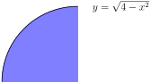 -
Solution #2: Set \(x_i^*=\frac{2i}{n}\text{.}\) Then \(a=x_0=0\) and \(b=x_n=2\) and \(\Delta x=\frac{2}{n}\text{.}\) So
\begin{align*} &\lim_{n\rightarrow\infty} \sum_{i=1}^n\frac{2}{n}\sqrt{4-\left(-2+\frac{2i}{n}\right)^2}\\ &= \lim_{n\rightarrow\infty} \sum_{i=1}^n f(x_i^*)\Delta x\quad \text{ with $f(x) = \sqrt{4-(-2+x)^2}$, $\Delta x = \frac{2}{n}$ }\\ &=\int_0^2 \sqrt{4-(-2+x)^2}\,\,\dee{x} \end{align*}For the integral \(\int_{0}^2 \sqrt{4-(-2+x)^2}\,\,\dee{x}\ , y=\sqrt{4-(x-2)^2}\) is equivalent to \((x-2)^2+y^2=4\text{,}\) \(y\ge 0\text{.}\) So the integral represents the area between the upper half of the circle \((x-2)^2+y^2=4\) (which is centered at \((2,0)\) and has radius \(2\)) and the \(x\)-axis with \(0\le x\le 2\text{,}\) which is a quarter circle with area \(\frac{1}{4}\cdot \pi\, 2^2 = \pi\text{.}\)
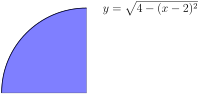
38. 2016Q1.
Consider the integral:
- Approximate this integral using the left Riemann sum with \(n=3\) intervals.
- Write down the expression for the right Riemann sum with \(n\) intervals and calculate the sum. Now take the limit \(n \to \infty\) in your expression for the Riemann sum, to evaluate the integral (\(*\)) exactly.
You may use the identity
For part (b): don't panic! Just take it one step at a time. The first step is to write down the Riemann sum. The second step is to evaluate the sum, using the given identity. The third step is to evaluate the limit \(n\rightarrow\infty\text{.}\)
(a) \(30\)
(b) \(41 \frac{1}{4}\)
(a) The left Riemann sum is defined as
We subdivide into \(n=3\) intervals, so that \(\Delta x = \frac{b-a}{n} =\frac{3-0}{3}=1\text{,}\) \(x_0=0\text{,}\) \(x_1=1\) and \(x_2=2\text{.}\) The function \(f(x) = 7 + x^3\) has the values \(f(x_0) = 7+0^3=7\text{,}\) \(f(x_1) = 7+1^3=8\text{,}\) and \(f(x_2) = 7+2^3=15\text{,}\) from which we evaluate
(b) We divide into \(n\) intervals so that \(\Delta x = \frac{b-a}{n}=\frac{3}{n}\) and \(x_i = a+i\De x= \frac{3i}{n}\text{.}\) The right Riemann sum is therefore:
To calculate the sum:
To evaluate the limit exactly, we take \(n \to \infty\text{.}\) The expressions involving \(1/n\) vanish leaving:
39. 2013A.
Using a limit of right--endpoint Riemann sums, evaluate \(\displaystyle\int_2^4 x^2\ \,\dee{x}\text{.}\) You may use the formulas \(\sum\limits_{i=1}^n i = \frac{n(n + 1)}{2}\) and \(\sum\limits_{i=1}^n i^2 = \frac{n(n + 1)(2n + 1)}{6}\text{.}\)
The first step is to write down the Riemann sum. The second step is to evaluate the sum, using the given formulas. The third step is to evaluate the limit as \(n\rightarrow\infty\text{.}\)
\(\dfrac{56}{3}\)
In general, the right-endpoint Riemann sum approximation to the integral \(\int_a^b f(x)\,\,\dee{x}\) using \(n\) rectangles is
where \(\De x=\frac{b-a}{n}\text{.}\) In this problem, \(a=2\text{,}\) \(b=4\text{,}\) and \(f(x)=x^2\text{,}\) so that \(\De x=\frac{2}{n}\) and the right--endpoint Riemann sum approximation becomes
So
40. 2016Q1.
Find \(\displaystyle\int_0^2 (x^3+x)\,\,\dee{x}\) using the definition of the definite integral. You may use the summation formulas \(\sum\limits_{i=1}^{n}i^3 = \frac{n^4+2n^3+n^2}4\) and \(\sum\limits_{i=1}^{n} i = \frac{n^2+n}{2}\text{.}\)
The first step is to write down the Riemann sum. The second step is to evaluate the sum, using the given formulas. The third step is to evaluate the limit \(n\rightarrow\infty\text{.}\)
\(6\)
We'll use right Riemann sums with \(a=0\) and \(b=2\text{.}\) When there are \(n\) rectangles, \(\Delta x = \frac{b-a}{n}=\frac{2}{n}\) and \(x_i = a+i\De x=2i/n\text{.}\) So we need to evaluate
41. 2014D.
Using a limit of right-endpoint Riemann sums, evaluate \(\displaystyle\int_1^4 (2x-1)\,\,\dee{x}\text{.}\) Do not use anti-differentiation, except to check your answer. 23 You may use the formula \(\sum\limits_{i=1}^{n} i = \frac{n(n+1)}{2}\text{.}\)
You've probably seen this hint before. It is worth repeating. Don't panic! Just take it one step at a time. The first step is to write down the Riemann sum. The second step is to evaluate the sum, using the given formula. The third step is to evaluate the limit \(n\rightarrow\infty\text{.}\)
\(12\)
We'll use right Riemann sums with \(a=1\text{,}\) \(b=4\) and \(f(x) =2x-1\text{.}\) When there are \(n\) rectangles, \(\Delta x = \frac{b-a}{n}=\frac{3}{n}\) and \(x_i = a+i\De x=1 + 3i/n\text{.}\) So we need to evaluate
42.
Give a function \(f(x)\) that has the following expression as a right Riemann sum when \(n=10\text{,}\) \(\Delta(x)=10\) and \(a=-5\text{:}\)
Using the definition of a right Riemann sum, we can come up with an expression for \(f(-5+10i)\text{.}\) In order to find \(f(x)\text{,}\) set \(x=-5+10i\text{.}\)
\(f(x)=\dfrac{3}{10}\left(\dfrac{x}{5}+8\right)^2\sin\left(\dfrac{2x}{5}+2\right)\)
Using the definition of a right Riemann sum,
Since \(\Delta x = 10\) and \(a=-5\text{,}\)
\begin{align*} \displaystyle\sum_{i=1}^{10} 3(7+2i)^2\sin(4i) &= \displaystyle\sum_{i=1}^{10} 10 f(-5+10i)\\ \end{align*}Dividing both expressions by 10,
\begin{align*} \displaystyle\sum_{i=1}^{10} \frac{3}{10}(7+2i)^2\sin(4i) &= \displaystyle\sum_{i=1}^{10} f(-5+10i)\\ \end{align*}So, we have an expression for \(f(-5+10i)\text{:}\)
\begin{align*} f(-5+10i) &= \frac{3}{10}(7+2i)^2\sin(4i)\\ \end{align*}In order to find \(f(x)\text{,}\) let \(x=-5+10i\text{.}\) Then \(i=\frac{x}{10}+\frac{1}{2}\text{.}\)
\begin{align*} f(x) &= \frac{3}{10}\left(7+2\left(\frac{x}{10}+\frac{1}{2}\right)\right)^2\sin\left(4\left(\frac{x}{10}+\frac{1}{2}\right)\right)\\ &=\frac{3}{10}\left(\frac{x}{5}+8\right)^2\sin\left(\frac{2x}{5}+2\right)\ . \end{align*}43.
Using the method of Example 6.1.2, evaluate
Recall that for a positive constant \(a\text{,}\) \(\diff{}{x}\left\{a^x\right\} = a^x \log a\text{,}\) where \(\log a\) is the natural logarithm (base \(e\)) of \(a\text{.}\)
\(\dfrac{1}{\log 2}\)
As in the text, we'll set up a Riemann sum for the given integral. Right Riemann sums have the simplest form, so we use a right Riemann sum, but we could equally well use left or midpoint.
The sum in parenthesis has the form of a geometric sum, with \(r=2^{1/n}\text{:}\)
\begin{align*} &=\lim_{n \to \infty}\frac{2^{1/n}}{n}\left( \frac{\left(2^{1/n}\right)^n-1}{2^{1/n}-1} \right)\\ &=\lim_{n \to \infty}\frac{2^{1/n}}{n}\left( \frac{2-1}{2^{1/n}-1} \right)\\ &=\lim_{n \to \infty} \frac{2^{1/n}}{n(2^{1/n}-1)}\\ \end{align*}Note as \(n \to \infty\text{,}\) \(1/n \to 0\text{,}\) so the numerator has limit 1, while the denominator has indeterminate form \(\infty\cdot 0\text{.}\) So, we'll do a little algebra to get this into a l'Hôpital-style indeterminate form:
\begin{align*} &=\lim_{n \to \infty} \frac{\frac{1}{n}\cdot2^{1/n}}{2^{1/n}-1}\\ &=\lim_{n \to \infty} \underbrace{\frac{\frac{1}{n}}{1-2^{-1/n}}}_{\atp{\mathrm{num}\to 0}{\mathrm{den}\to 0}}\\ \end{align*}Now we can use l'Hôpital's rule. Recall \(\diff{}{x}\left\{2^x\right\}=2^x\log x\text{,}\) where \(\log x\) is the natural logarithm of \(x\text{,}\) also sometimes written \(\ln x\text{.}\) We'll need to use the chain rule when we differentiate the denominator.
\begin{align*} &=\lim_{n \to \infty} \frac{\frac{-1}{n^2}}{-2^{-1/n}\log 2 \cdot \frac{1}{n^2}}\\ &=\lim_{n \to \infty} \frac{2^{1/n}}{\log 2}\\ &=\frac{1}{\log 2} \end{align*}Using a calculator, we see this is about 1.44 square units.
44.
- Using the method of Example 6.1.2, evaluate\begin{equation*} \int_a^b 10^x \dee{x} \end{equation*}
Using your answer from above, make a guess for
where \(c\) is a positive constant. Does this agree with Question 43?
Part (a) follows the same pattern as Question 43--there's just a little more algebra involved, since our lower limit of integration is not 0.
(a) \(\dfrac{1}{\log 10}\left(10^b-10^a\right)\)
(b) \(\dfrac{1}{\log c}\left(c^b-c^a\right)\text{;}\) yes, it agrees.
As in the text, we'll set up a Riemann sum for the given integral. Right Riemann sums have the simplest form:
Now the sum in parentheses has the form of a geometric sum, with \(r=10^{\frac{b-a}{n}}\text{:}\)
\begin{align*} &=\lim_{n \to \infty} \frac{b-a}{n}\cdot 10^{a}\cdot 10^{\frac{b-a}{n}}\left( \frac{\left(10^{\frac{b-a}{n}}\right)^n-1}{10^{\frac{b-a}{n}}-1} \right)\\ &=\lim_{n \to \infty} \frac{\textcolor{blue}{b-a}}{n}\cdot \textcolor{red}{10^{a}}\cdot 10^{\frac{b-a}{n}}\left( \frac{\textcolor{purple}{10^{b-a}-1}}{10^{\frac{b-a}{n}}-1} \right)\\ \end{align*}The coloured parts do not depend on \(n\text{,}\) so for simplicity we can move them outside the limit.
\begin{align*} &=\textcolor{blue}{(b-a)}\cdot\textcolor{red}{10^a}\left(\textcolor{purple}{10^{b-a}-1}\right)\lim_{n \to \infty} \frac{1}{n}\cdot \left( \frac{ 10^{\frac{b-a}{n}} }{10^{\frac{b-a}{n}}-1} \right)\\ &={(b-a)}\cdot\left({10^{b}-10^a}\right)\lim_{n \to \infty} \underbrace{\left( \frac{ 1/n}{1-10^{-\frac{b-a}{n}}} \right)}_{\atp{\mathrm{num}\to 0}{\mathrm{den}\to 0}}\\ \end{align*}Now we can use l'Hôpital's rule. Recall \(\diff{}{x}\left\{10^x\right\}=10^x\log x\text{,}\) where \(\log x\) is the natural logarithm of \(x\text{,}\) also sometimes written \(\ln x\text{.}\) For the denominator, we will have to use the chain rule.
\begin{align*} &={(b-a)}\cdot\left({10^{b}-10^a}\right)\lim_{n \to \infty} \left( \frac{ -1/n^2}{-10^{-\frac{b-a}{n}}\cdot \log 10 \cdot \frac{b-a}{n^2}} \right)\\ &={(b-a)}\cdot\left({10^{b}-10^a}\right)\lim_{n \to \infty} \left( \frac{ 1}{10^{-\frac{b-a}{n}}\cdot \log 10 \cdot (b-a)} \right)\\ &={(b-a)}\cdot\left({10^{b}-10^a}\right) \left( \frac{ 1}{ \log 10 \cdot (b-a)} \right)\\ &=\frac{1}{\log 10}\left(10^b-10^a\right) \end{align*}For part (b), we can guess that if 10 were changed to \(c\text{,}\) our answer would be
In Question 43, we had \(a=0\text{,}\) \(b=1\text{,}\) and \(c=2\text{.}\) In this case, the formula we guessed above gives
This does indeed match the answer we calculated.
(In fact, we can directly show \(\displaystyle\int_a^b c^x \dee{x}=\dfrac{1}{\log c}\left(c^b-c^a\right)\) using the method of this problem.)
45.
Evaluate \(\displaystyle\int_0^a \sqrt{1-x^2}\dee{x}\) using geometry, if \(0 \leq a \leq 1\text{.}\)
Your area can be divided into a section of a circle and a triangle. Then you can use geometry to find the area of each piece.
\(\frac{\pi}{4} -\frac{1}{2} \arccos(a) + \frac{1}{2}a\sqrt{1-a^2}\)
First, we note \(y=\sqrt{1-x^2}\) is the upper half of a circle of radius 1, centred at the origin. We're taking the area under the curve from 0 to \(a\text{,}\) so the area in question is as shown in the picture below.

In order to use geometry to find this area, we break it up into two pieces: a sector of a circle, and a triangle, shown below.
-
Area of sector: The sector is a portion of a circle with radius 1, with inner angle \(\theta\text{.}\) So, its area is \(\frac{\theta}{2\pi}\left(\mbox{area of circle}\right) = \frac{\theta}{2\pi}\left(\pi\right) = \frac{\theta}{2}\text{.}\)
Our job now is to find \(\theta\) in terms of \(a\text{.}\) Note \(\frac{\pi}{2}-\theta\) is the inner angle of the red triangle, which lies in the unit circle. So, \(\cos\left(\frac{\pi}{2}-\theta\right)=a\text{.}\) Then \(\frac{\pi}{2}-\theta= \arccos(a)\text{,}\) and so \(\theta = \frac{\pi}{2} - \arccos(a)\text{.}\)
Then the area of the sector is \(\frac{\pi}{4} - \frac{1}{2}\arccos(a)\) square units.
Area of triangle: The triangle has base \(a\text{.}\) Its height is the \(y\)-value of the function when \(x=a\text{,}\) so its height is \(\sqrt{1-a^2}\text{.}\) Then the area of the triangle is \(\frac{1}{2}a\sqrt{1-a^2}\text{.}\)
We conclude \(\displaystyle\int_0^a \sqrt{1-x^2}\dee{x} = \frac{\pi}{4} -\frac{1}{2} \arccos(a) + \frac{1}{2}a\sqrt{1-a^2}\text{.}\)
46.
Suppose \(f(x)\) is a positive, decreasing function from \(x=a\) to \(x=b\text{.}\) You give an upper and lower bound on the area under the curve \(y=f(x)\) using \(n\) rectangles and a left and right Riemann sum, respectively, as in the picture below.
- What is the difference between the lower bound and the upper bound? (That is, if we subtract the smaller estimate from the larger estimate, what do we get?) Give your answer in terms of \(f\text{,}\) \(a\text{,}\) \(b\text{,}\) and \(n\text{.}\)
- If you want to approximate the area under the curve to within 0.01 square units using this method, how many rectangles should you use? That is, what should \(n\) be?
- The difference between the upper and lower bounds is the area that is outside of the smaller rectangles but inside the larger rectangles. Drawing both sets of rectangles on one picture might make things clearer. Look for an easy way to compute the area you want.
- Use your answer from Part (a). Your answer will depend on \(f\text{,}\) \(a\text{,}\) and \(b\text{.}\)
- \(\displaystyle \left[f(b)-f(a)\right]\cdot\dfrac{b-a}{n}\)
- Choose \(n\) to be an integer that is greater than or equal to \(100\left[f(b)-f(a)\right](b-a)\text{.}\)
-
The difference between our upper and lower bounds is the difference in areas between the larger set of rectangles and the smaller set of rectangles. Drawing them on a single picture makes this a little clearer.
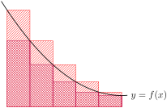Each of the rectangles has width \(\frac{b-a}{n}\text{,}\) since we took a segment of the \(x\)-axis with length \(b-a\) and chopped it into \(n\) pieces. We could calculate the height of each rectangle, but it would be a little complicated, since it differs for each of them. An easier method is to notice that the area we want to calculate can be imagined as a single rectangle:
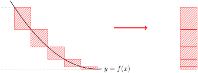The rectangle has base \(\frac{b-a}{n}\text{.}\) Its highest coordinate is \(f(a)\text{,}\) and its lowest is \(f(b)\text{,}\) so its height is \(f(b)-f(a)\text{.}\) Therefore, the difference in area between our lower bound and our upper bound is:
\begin{equation*} \left[f(b)-f(a)\right]\cdot\frac{b-a}{n} \end{equation*} -
We want to give a range with length at most 0.01, and guarantee that the area under the curve \(y=f(x)\) is inside that range. In the previous part, we figured out that when we use \(n\) rectangles, the length of our range is \(\left[f(b)-f(a)\right]\cdot\frac{b-a}{n}\text{.}\) So, all we have to do is set this to be less than or equal to 0.01, and solve for \(n\text{:}\)
\begin{align*} \left[f(b)-f(a)\right]\cdot\frac{b-a}{n}&\leq 0.01\\ 100\left[f(b)-f(a)\right]\cdot(b-a)&\leq n \end{align*}We can choose \(n\) to be an integer that is greater than or equal to \(100\left[f(b)-f(a)\right]\cdot(b-a)\text{.}\) Using that many rectangles, we find an upper and lower bound for the area under the curve. If we choose any number between our upper and lower bound as an approximation for the area under the curve, our error is no more than 0.01.
Remark: this question depends on the fact that \(f\) is decreasing and positive from \(a\) to \(b\text{.}\) In general, bounding errors on approximations like this is not so straightforward.
47.
Let \(f(x)\) be a linear function, let \(a \lt b\) be integers, and let \(n\) be a whole number. True or false: if we average the left and right Riemann sums for \(\displaystyle\int_a^b f(x)\dee{x}\) using \(n\) rectangles, we get the same value as the midpoint Riemann sum using \(n\) rectangles.
Since \(f(x)\) is linear, there exist real numbers \(m\) and \(c\) such that \(f(x)=mx+c\text{.}\) It's a little easier to first look at a single triangle from each sum, rather than the sums in their entirety.
true (but note, for a non-linear function, it is possible that the midpoint Riemann sum is not the average of the other two)
Since \(f(x)\) is linear, there exist real numbers \(m\) and \(c\) such that \(f(x)=mx+c\text{.}\) Now we can do some calculations. Suppose we have a rectangle in our Riemann sum that takes up the interval \([x,x+w]\text{.}\)
- If we are using a left Riemann sum, our rectangle has height \(f(x)=mx+c\text{.}\) Then it has area \(w(mx+c)\text{.}\)
- If we are using a right Riemann sum, our rectangle has height \(f(x+w)=m(x+w)+c=mx+c+mw\text{.}\) Then it has area \(w(mx+c+mw)\text{.}\)
- If we are using a midpoint Riemann sum, our rectangle has height \(f(x+\frac{1}{2}w)=m(x+\frac{1}{2}w)+c=mx+c+\frac{1}{2}mw\text{.}\) Then it has area \(w\left(mx+c+\frac{1}{2}w\right)\text{.}\)
So, for each rectangle in our sums, the midpoint rectangle has the same area as the average of the left and right rectangles:
It follows that the midpoint Riemann sum has a value equal to the average of the values of the left and right Riemann sums. To see this, let the rectangles in the midpoint Riemann sum have areas \(M_1,M_2,\ldots,M_n\text{,}\) let the rectangles in the left Riemann sum have areas \(\textcolor{blue}{L_1,L_2,\ldots,L_n}\text{,}\) and let the rectangles in the right Riemann sum have areas \(\textcolor{red}{R_1,R_2,\ldots,R_n}\text{.}\) Then the midpoint Riemann sum evaluates to \(M_1+M_2+\cdots+M_n\text{,}\) and:
So, the statement is true.
(Note, however, it is false for many non-linear functions \(f(x)\text{.}\))